Lectures · Bài giảng › L3
Determinants, eigenvalues, adjoint and Cramer's ruleĐịnh thức, trị riêng, ma trận phụ hợp và quy tắc Cramer
A determinant is one number attached to a square matrix that says whether the matrix is invertible ($\det A\ne0$) and how it scales volume. Lecture 3 gives three ways to compute it: the cofactor expansion along any row or column (3.1), row reduction to a triangular matrix (3.2, with the effect of each row operation on the value) and the properties $\det(AB)=\det A\det B$, $\det A^T=\det A$ (3.3). Then it uses determinants for three things: the eigenvalue problem $Ax=\lambda x$ via $\det(\lambda I-A)=0$ (3.4), the adjoint formula $A^{-1}=\frac1{\det A}\operatorname{adj}A$ and Cramer's rule (3.5).
Teach the decision: for a $2\times2$ use $ad-bc$; for $3\times3$ the arrow rule or a cofactor expansion along the row with most zeros; for bigger matrices reduce to triangular form, keeping track of swaps (sign) and scalings. Stress the traps: $\det(A+B)\ne\det A+\det B$ and $\det(cA)=c^n\det A$.
Định thức là một con số gắn với ma trận vuông cho biết ma trận có khả nghịch hay không ($\det A\ne0$) và nó co giãn thể tích bao nhiêu. Bài 3 cho ba cách tính: khai triển theo phần bù đại số dọc theo hàng hoặc cột bất kỳ (3.1), khử hàng về ma trận tam giác (3.2, kèm tác động của từng phép biến đổi hàng lên giá trị) và các tính chất $\det(AB)=\det A\det B$, $\det A^T=\det A$ (3.3). Sau đó dùng định thức cho ba việc: bài toán trị riêng $Ax=\lambda x$ qua $\det(\lambda I-A)=0$ (3.4), công thức phụ hợp $A^{-1}=\frac1{\det A}\operatorname{adj}A$ và quy tắc Cramer (3.5).
Hãy dạy việc chọn cách: với $2\times2$ dùng $ad-bc$; với $3\times3$ dùng quy tắc mũi tên hoặc khai triển theo hàng có nhiều số không nhất; với ma trận lớn hơn rút gọn về dạng tam giác, theo dõi các phép đổi chỗ (đổi dấu) và nhân hàng. Nhấn mạnh các bẫy: $\det(A+B)\ne\det A+\det B$ và $\det(cA)=c^n\det A$.
Textbook · Giáo trình: Larson, Elementary Linear Algebra 8th ed., ch. 3 (3.1–3.4) and 7.1 (eigenvalues) · Strang, Introduction to Linear Algebra, ch. 5 (5.1–5.3) and 6.1
Slide list · Danh sách slide (68)
Lecture 3: determinants · Bài 3: định thức
★ Context · Bổ trợ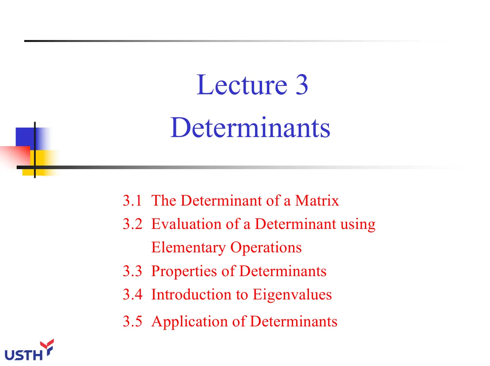
Title slide. Five sections: 3.1 The determinant of a matrix; 3.2 Evaluation using elementary operations; 3.3 Properties of determinants; 3.4 Introduction to eigenvalues; 3.5 Applications of determinants (adjoint and Cramer's rule).
Slide tiêu đề. Năm mục: 3.1 Định thức của ma trận; 3.2 Tính định thức bằng phép biến đổi sơ cấp; 3.3 Tính chất của định thức; 3.4 Giới thiệu trị riêng; 3.5 Ứng dụng của định thức (ma trận phụ hợp và quy tắc Cramer).
3.1 The determinant of a $2\times2$ matrix · 3.1 Định thức của ma trận $2\times2$
★★★ Core · Cốt lõi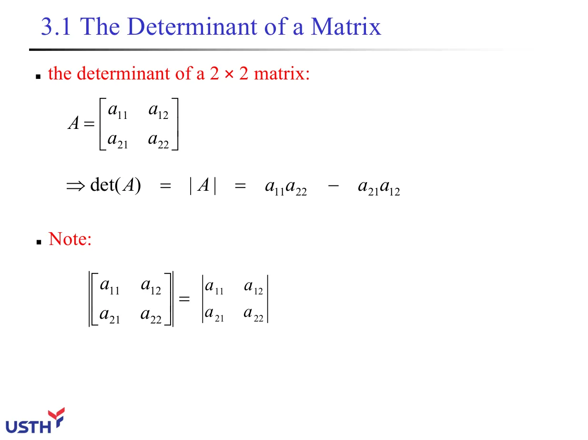
For $A=\begin{bmatrix}a_{11}&a_{12}\\a_{21}&a_{22}\end{bmatrix}$, $\det(A)=|A|=a_{11}a_{22}-a_{21}a_{12}$: product of the main diagonal minus product of the other diagonal. The notation $|A|$ with straight bars means the determinant (a number), not the absolute value; the bars around the brackets $\left|\begin{bmatrix}\cdots\end{bmatrix}\right|$ and around the entries $\begin{vmatrix}\cdots\end{vmatrix}$ mean the same thing.
Với $A=\begin{bmatrix}a_{11}&a_{12}\\a_{21}&a_{22}\end{bmatrix}$, $\det(A)=|A|=a_{11}a_{22}-a_{21}a_{12}$: tích đường chéo chính trừ tích đường chéo còn lại. Ký hiệu $|A|$ với hai thanh thẳng nghĩa là định thức (một số), không phải giá trị tuyệt đối; thanh bao quanh dấu ngoặc $\left|\begin{bmatrix}\cdots\end{bmatrix}\right|$ và thanh bao quanh các phần tử $\begin{vmatrix}\cdots\end{vmatrix}$ có cùng ý nghĩa.
Compute $\begin{vmatrix}3&-2\\1&4\end{vmatrix}$ and show that $\begin{vmatrix}x&y\\2x&2y\end{vmatrix}=0$.
Tính $\begin{vmatrix}3&-2\\1&4\end{vmatrix}$ và chứng tỏ $\begin{vmatrix}x&y\\2x&2y\end{vmatrix}=0$.
Answer and solution · Đáp án và lời giải
Answer · Đáp án: $14$ and $0$
$3\cdot4-(1)(-2)=12+2=14$. $x\cdot2y-2x\cdot y=0$: the second row is twice the first, which always gives $0$.
$3\cdot4-(1)(-2)=12+2=14$. $x\cdot2y-2x\cdot y=0$: hàng hai gấp đôi hàng một, luôn cho $0$.
Example 1: $2\times2$ determinants · Ví dụ 1: định thức $2\times2$
★★★ Core · Cốt lõi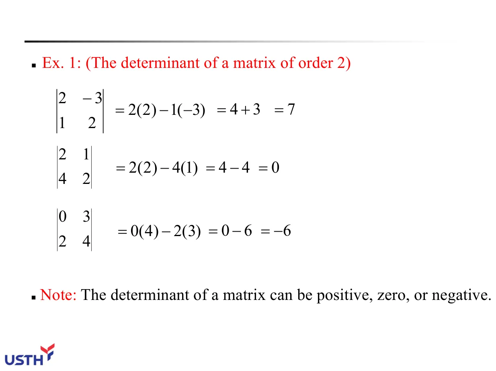
$\begin{vmatrix}2&-3\\1&2\end{vmatrix}=2(2)-1(-3)=7$; $\begin{vmatrix}2&1\\4&2\end{vmatrix}=2(2)-4(1)=0$; $\begin{vmatrix}0&3\\2&4\end{vmatrix}=0(4)-2(3)=-6$. Note: the determinant of a matrix can be positive, zero or negative. The middle one is $0$ because the second row is twice the first.
$\begin{vmatrix}2&-3\\1&2\end{vmatrix}=2(2)-1(-3)=7$; $\begin{vmatrix}2&1\\4&2\end{vmatrix}=2(2)-4(1)=0$; $\begin{vmatrix}0&3\\2&4\end{vmatrix}=0(4)-2(3)=-6$. Lưu ý: định thức của ma trận có thể dương, bằng không hoặc âm. Định thức ở giữa bằng $0$ vì hàng hai gấp đôi hàng một.
Find all $x$ with $\begin{vmatrix}x&2\\3&x-1\end{vmatrix}=0$.
Tìm mọi $x$ để $\begin{vmatrix}x&2\\3&x-1\end{vmatrix}=0$.
Answer and solution · Đáp án và lời giải
Answer · Đáp án: $x=3$ or $x=-2$
$x(x-1)-6=x^2-x-6=(x-3)(x+2)=0$. At these two values the rows become proportional.
$x(x-1)-6=x^2-x-6=(x-3)(x+2)=0$. Tại hai giá trị này các hàng tỉ lệ nhau.
Defining the determinant inductively · Định nghĩa định thức bằng quy nạp
★★ Important · Quan trọng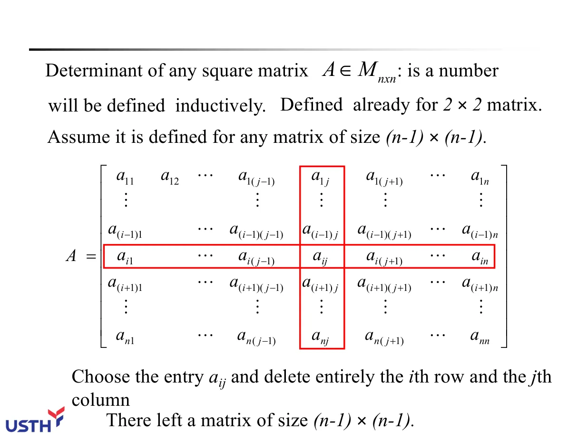
The determinant of an $n\times n$ matrix is a number defined inductively: it is already defined for $2\times2$; assume it is defined for every $(n-1)\times(n-1)$ matrix. Pick an entry $a_{ij}$ and delete the whole row $i$ and column $j$: what is left is an $(n-1)\times(n-1)$ matrix, whose determinant we know.
Định thức của ma trận $n\times n$ là một số được định nghĩa bằng quy nạp: nó đã được định nghĩa cho $2\times2$; giả sử đã định nghĩa cho mọi ma trận $(n-1)\times(n-1)$. Chọn một phần tử $a_{ij}$ và xóa cả hàng $i$ và cột $j$: phần còn lại là ma trận $(n-1)\times(n-1)$, mà ta đã biết định thức.
Expand $A=\begin{bmatrix}1&2&3\\0&4&5\\1&0&6\end{bmatrix}$ along row 1 using $2\times2$ determinants.
Khai triển $A=\begin{bmatrix}1&2&3\\0&4&5\\1&0&6\end{bmatrix}$ theo hàng 1 bằng các định thức $2\times2$.
Answer and solution · Đáp án và lời giải
Answer · Đáp án: $22$
$\det A=1\begin{vmatrix}4&5\\0&6\end{vmatrix}-2\begin{vmatrix}0&5\\1&6\end{vmatrix}+3\begin{vmatrix}0&4\\1&0\end{vmatrix}=1(24)-2(-5)+3(-4)=24+10-12=22$ (signs alternate $+,-,+$).
$\det A=1\begin{vmatrix}4&5\\0&6\end{vmatrix}-2\begin{vmatrix}0&5\\1&6\end{vmatrix}+3\begin{vmatrix}0&4\\1&0\end{vmatrix}=1(24)-2(-5)+3(-4)=24+10-12=22$ (dấu xen kẽ $+,-,+$).
The submatrix left after deleting row $i$ and column $j$ · Ma trận con còn lại sau khi xóa hàng $i$, cột $j$
★★ Important · Quan trọng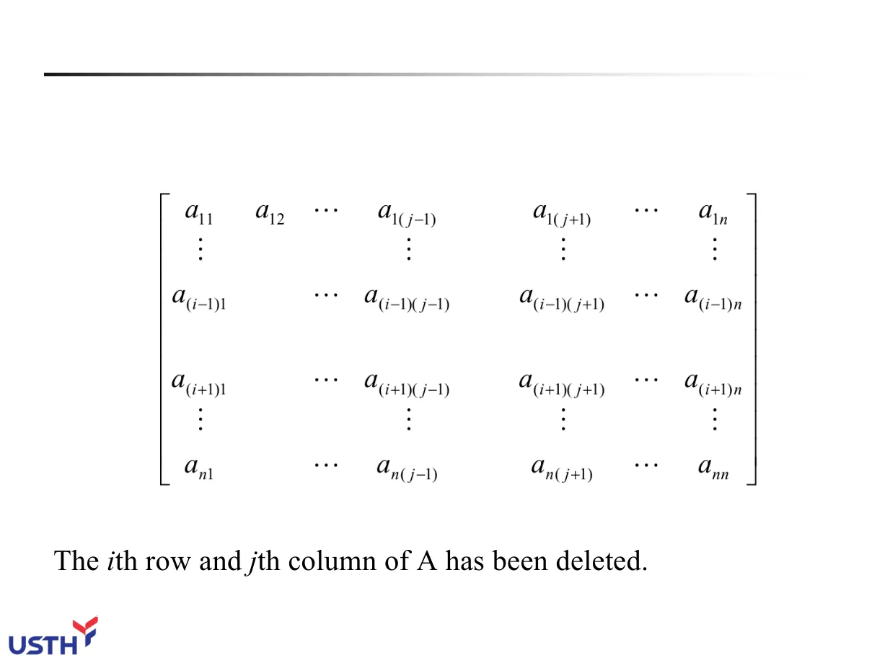
The figure shows the $n\times n$ matrix with row $i$ and column $j$ crossed out through the entry $a_{ij}$, and then the $(n-1)\times(n-1)$ matrix that remains. Its determinant is the minor of $a_{ij}$ defined next.
Hình cho thấy ma trận $n\times n$ với hàng $i$ và cột $j$ bị gạch qua phần tử $a_{ij}$, rồi ma trận $(n-1)\times(n-1)$ còn lại. Định thức của nó là định thức con (minor) của $a_{ij}$ được định nghĩa tiếp theo.
Which $2\times2$ matrix remains from $\begin{bmatrix}1&2&3\\4&5&6\\7&8&9\end{bmatrix}$ when row 2 and column 3 are deleted?
Ma trận $2\times2$ nào còn lại từ $\begin{bmatrix}1&2&3\\4&5&6\\7&8&9\end{bmatrix}$ khi xóa hàng 2 và cột 3?
Answer and solution · Đáp án và lời giải
Answer · Đáp án: $\begin{bmatrix}1&2\\7&8\end{bmatrix}$
Crossing out the second row $(4,5,6)$ and the third column $(3,6,9)$ leaves rows 1 and 3 and columns 1 and 2: $\begin{bmatrix}1&2\\7&8\end{bmatrix}$.
Gạch hàng hai $(4,5,6)$ và cột ba $(3,6,9)$ còn lại hàng 1 và 3, cột 1 và 2: $\begin{bmatrix}1&2\\7&8\end{bmatrix}$.
Minors and cofactors · Định thức con và phần bù đại số
★★★ Core · Cốt lõi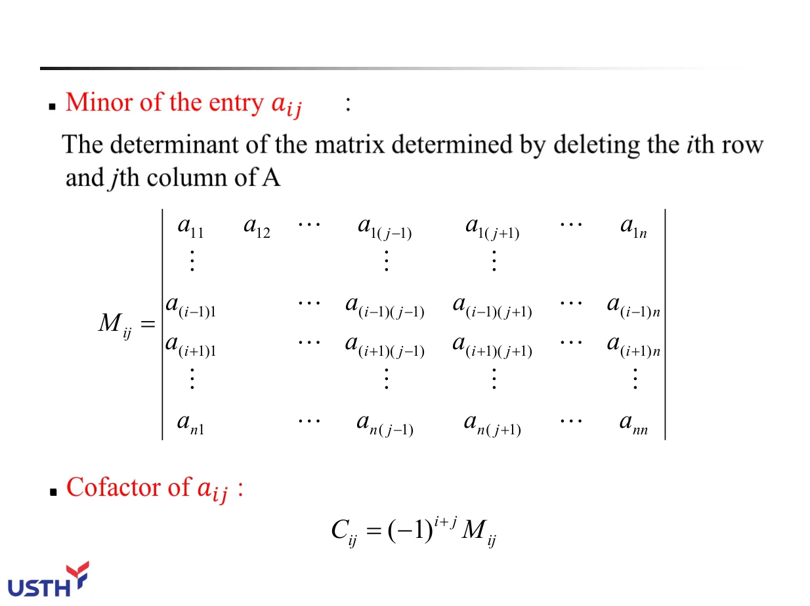
The minor $M_{ij}$ of the entry $a_{ij}$ is the determinant of the matrix obtained by deleting the $i$-th row and $j$-th column of $A$. The cofactor is $C_{ij}=(-1)^{i+j}M_{ij}$: the minor with a sign that depends on the position. The sign is $+$ if $i+j$ is even and $-$ if $i+j$ is odd.
Định thức con $M_{ij}$ của phần tử $a_{ij}$ là định thức của ma trận nhận được khi xóa hàng thứ $i$ và cột thứ $j$ của $A$. Phần bù đại số là $C_{ij}=(-1)^{i+j}M_{ij}$: định thức con kèm một dấu phụ thuộc vị trí. Dấu là $+$ nếu $i+j$ chẵn và $-$ nếu $i+j$ lẻ.
For $A=\begin{bmatrix}2&0&1\\1&3&2\\1&1&1\end{bmatrix}$ find $M_{23}$ and $C_{23}$.
Với $A=\begin{bmatrix}2&0&1\\1&3&2\\1&1&1\end{bmatrix}$ tìm $M_{23}$ và $C_{23}$.
Answer and solution · Đáp án và lời giải
Answer · Đáp án: $M_{23}=2$, $C_{23}=-2$
Delete row 2 and column 3: $\begin{vmatrix}2&0\\1&1\end{vmatrix}=2$. The position $(2,3)$ has $i+j=5$ odd, so $C_{23}=(-1)^5\cdot2=-2$.
Xóa hàng 2 và cột 3: $\begin{vmatrix}2&0\\1&1\end{vmatrix}=2$. Vị trí $(2,3)$ có $i+j=5$ lẻ nên $C_{23}=(-1)^5\cdot2=-2$.
Example: $M_{21}$, $M_{22}$ and their cofactors · Ví dụ: $M_{21}$, $M_{22}$ và các phần bù đại số
★★ Important · Quan trọng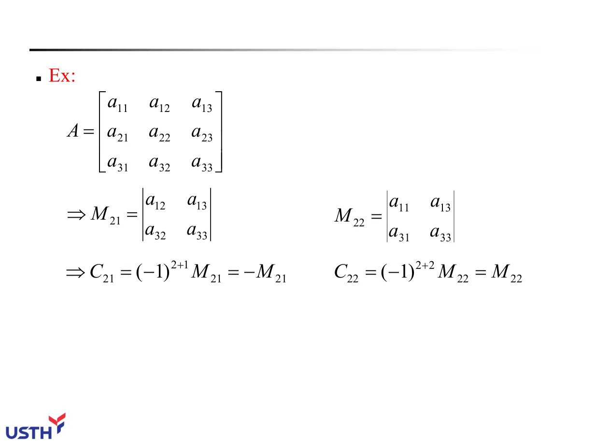
For a general $3\times3$ matrix, $M_{21}=\begin{vmatrix}a_{12}&a_{13}\\a_{32}&a_{33}\end{vmatrix}$ (delete row 2, column 1) and $M_{22}=\begin{vmatrix}a_{11}&a_{13}\\a_{31}&a_{33}\end{vmatrix}$ (delete row 2, column 2). Then $C_{21}=(-1)^{2+1}M_{21}=-M_{21}$ and $C_{22}=(-1)^{2+2}M_{22}=M_{22}$.
Với ma trận $3\times3$ tổng quát, $M_{21}=\begin{vmatrix}a_{12}&a_{13}\\a_{32}&a_{33}\end{vmatrix}$ (xóa hàng 2, cột 1) và $M_{22}=\begin{vmatrix}a_{11}&a_{13}\\a_{31}&a_{33}\end{vmatrix}$ (xóa hàng 2, cột 2). Khi đó $C_{21}=(-1)^{2+1}M_{21}=-M_{21}$ và $C_{22}=(-1)^{2+2}M_{22}=M_{22}$.
Find $C_{21}$ and $C_{22}$ for $\begin{bmatrix}1&2&3\\4&5&6\\7&8&10\end{bmatrix}$.
Tìm $C_{21}$ và $C_{22}$ với $\begin{bmatrix}1&2&3\\4&5&6\\7&8&10\end{bmatrix}$.
Answer and solution · Đáp án và lời giải
Answer · Đáp án: $C_{21}=4$, $C_{22}=-11$
$M_{21}=\begin{vmatrix}2&3\\8&10\end{vmatrix}=20-24=-4$, so $C_{21}=-M_{21}=4$. $M_{22}=\begin{vmatrix}1&3\\7&10\end{vmatrix}=10-21=-11$, so $C_{22}=M_{22}=-11$.
$M_{21}=\begin{vmatrix}2&3\\8&10\end{vmatrix}=20-24=-4$, nên $C_{21}=-M_{21}=4$. $M_{22}=\begin{vmatrix}1&3\\7&10\end{vmatrix}=10-21=-11$, nên $C_{22}=M_{22}=-11$.
The sign pattern for cofactors · Bảng dấu của các phần bù đại số
★★★ Core · Cốt lõi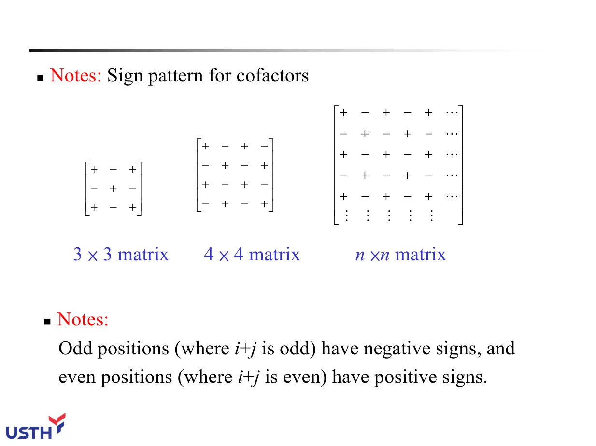
The signs $(-1)^{i+j}$ form a checkerboard starting with $+$ at the top-left corner: $\begin{bmatrix}+&-&+\\-&+&-\\+&-&+\end{bmatrix}$ for $3\times3$, and the same alternating pattern for $4\times4$ and $n\times n$. Odd positions ($i+j$ odd) are negative and even positions are positive.
Các dấu $(-1)^{i+j}$ tạo thành bàn cờ bắt đầu bằng $+$ ở góc trên trái: $\begin{bmatrix}+&-&+\\-&+&-\\+&-&+\end{bmatrix}$ với $3\times3$, và cùng quy luật xen kẽ cho $4\times4$ và $n\times n$. Vị trí lẻ ($i+j$ lẻ) mang dấu âm và vị trí chẵn mang dấu dương.
Give the sign of the cofactors in positions $(1,1)$, $(1,2)$, $(2,3)$, $(3,4)$, $(4,4)$.
Cho dấu của các phần bù đại số ở vị trí $(1,1)$, $(1,2)$, $(2,3)$, $(3,4)$, $(4,4)$.
Answer and solution · Đáp án và lời giải
Answer · Đáp án: $+,\ -,\ -,\ -,\ +$
$i+j$ equals $2,3,5,7,8$ respectively: even gives $+$, odd gives $-$.
$i+j$ lần lượt bằng $2,3,5,7,8$: chẵn cho $+$, lẻ cho $-$.
Example 2: all the minors · Ví dụ 2: tất cả các định thức con
★★★ Core · Cốt lõi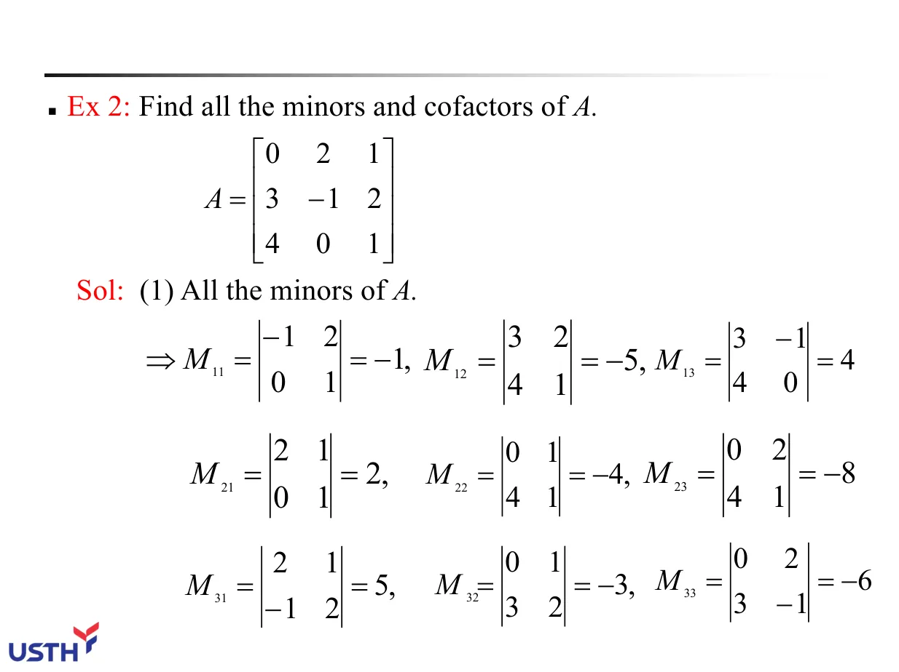
For $A=\begin{bmatrix}0&2&1\\3&-1&2\\4&0&1\end{bmatrix}$ the nine minors are $M_{11}=\begin{vmatrix}-1&2\\0&1\end{vmatrix}=-1$, $M_{12}=\begin{vmatrix}3&2\\4&1\end{vmatrix}=-5$, $M_{13}=\begin{vmatrix}3&-1\\4&0\end{vmatrix}=4$; $M_{21}=\begin{vmatrix}2&1\\0&1\end{vmatrix}=2$, $M_{22}=\begin{vmatrix}0&1\\4&1\end{vmatrix}=-4$, $M_{23}=\begin{vmatrix}0&2\\4&0\end{vmatrix}=-8$; $M_{31}=\begin{vmatrix}2&1\\-1&2\end{vmatrix}=5$, $M_{32}=\begin{vmatrix}0&1\\3&2\end{vmatrix}=-3$, $M_{33}=\begin{vmatrix}0&2\\3&-1\end{vmatrix}=-6$.
Với $A=\begin{bmatrix}0&2&1\\3&-1&2\\4&0&1\end{bmatrix}$ chín định thức con là $M_{11}=\begin{vmatrix}-1&2\\0&1\end{vmatrix}=-1$, $M_{12}=\begin{vmatrix}3&2\\4&1\end{vmatrix}=-5$, $M_{13}=\begin{vmatrix}3&-1\\4&0\end{vmatrix}=4$; $M_{21}=\begin{vmatrix}2&1\\0&1\end{vmatrix}=2$, $M_{22}=\begin{vmatrix}0&1\\4&1\end{vmatrix}=-4$, $M_{23}=\begin{vmatrix}0&2\\4&0\end{vmatrix}=-8$; $M_{31}=\begin{vmatrix}2&1\\-1&2\end{vmatrix}=5$, $M_{32}=\begin{vmatrix}0&1\\3&2\end{vmatrix}=-3$, $M_{33}=\begin{vmatrix}0&2\\3&-1\end{vmatrix}=-6$.
Verify the nine minors of the slide.
Kiểm tra chín định thức con của slide.
Answer and solution · Đáp án và lời giải
Answer · Đáp án: $-1,-5,4,\ 2,-4,-8,\ 5,-3,-6$
Each minor is a $2\times2$ determinant of the matrix left after deleting one row and one column, e.g. $M_{23}$ deletes row 2 and column 3: $\begin{vmatrix}0&2\\4&0\end{vmatrix}=0-8=-8$.
Mỗi định thức con là định thức $2\times2$ của ma trận còn lại sau khi xóa một hàng và một cột, ví dụ $M_{23}$ xóa hàng 2 và cột 3: $\begin{vmatrix}0&2\\4&0\end{vmatrix}=0-8=-8$.
Example 2: all the cofactors · Ví dụ 2: tất cả các phần bù đại số
★★★ Core · Cốt lõi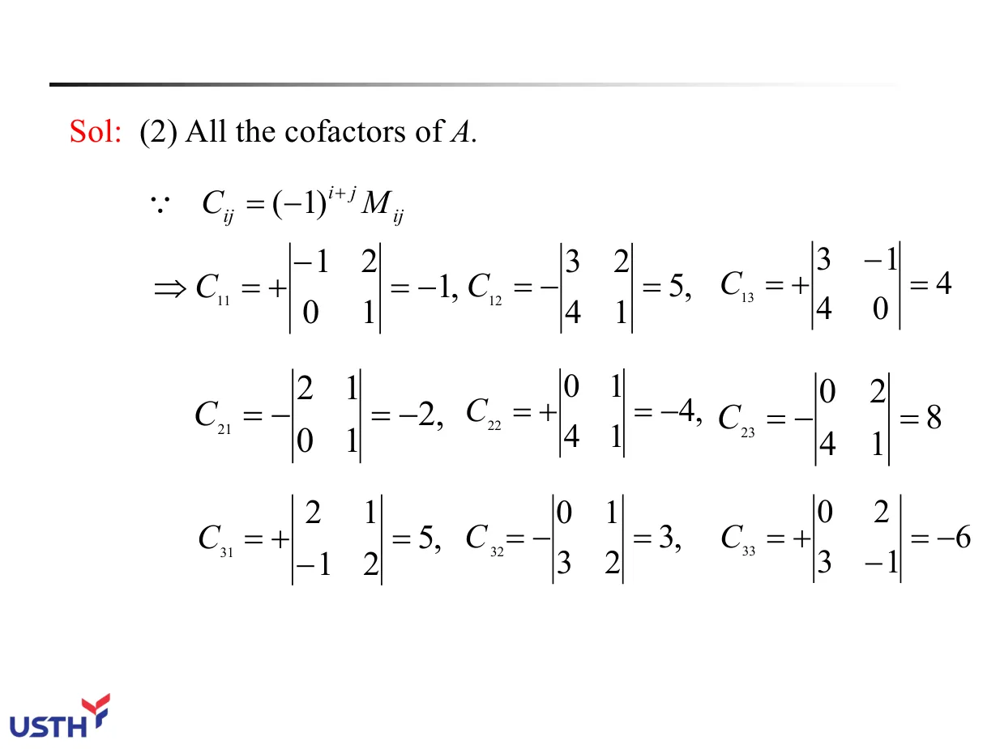
Apply the checkerboard signs to the minors: $C_{11}=-1$, $C_{12}=+5$, $C_{13}=4$; $C_{21}=-2$, $C_{22}=-4$, $C_{23}=+8$; $C_{31}=5$, $C_{32}=+3$, $C_{33}=-6$. Only the entries in the odd positions $(1,2),(2,1),(2,3),(3,2)$ change sign.
Áp dụng dấu bàn cờ cho các định thức con: $C_{11}=-1$, $C_{12}=+5$, $C_{13}=4$; $C_{21}=-2$, $C_{22}=-4$, $C_{23}=+8$; $C_{31}=5$, $C_{32}=+3$, $C_{33}=-6$. Chỉ các phần tử ở vị trí lẻ $(1,2),(2,1),(2,3),(3,2)$ đổi dấu.
Verify the nine cofactors of the slide.
Kiểm tra chín phần bù đại số của slide.
Answer and solution · Đáp án và lời giải
Answer · Đáp án: $-1,5,4,\ -2,-4,8,\ 5,3,-6$
Multiply each minor by $(-1)^{i+j}$: the minors $-5,2,-8,-3$ in odd positions become $5,-2,8,3$.
Nhân mỗi định thức con với $(-1)^{i+j}$: các định thức con $-5,2,-8,-3$ ở vị trí lẻ thành $5,-2,8,3$.
Theorem 3.1: expansion by cofactors · Định lý 3.1: khai triển theo phần bù đại số
★★★ Core · Cốt lõi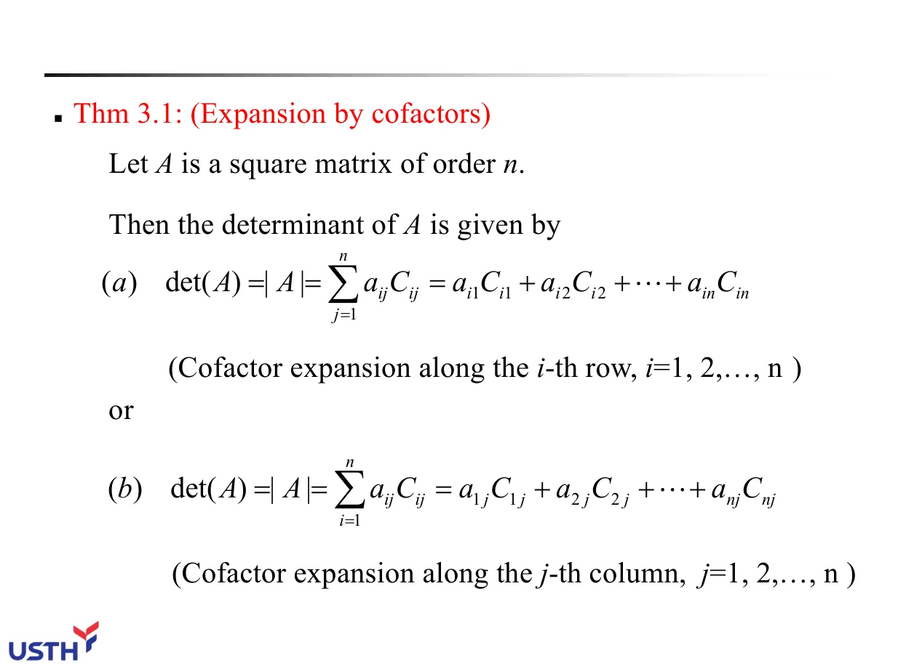
Theorem 3.1. For a square matrix of order $n$, $\det A=\sum_{j=1}^na_{ij}C_{ij}=a_{i1}C_{i1}+\cdots+a_{in}C_{in}$ (expansion along row $i$, any $i$), and also $\det A=\sum_{i=1}^na_{ij}C_{ij}=a_{1j}C_{1j}+\cdots+a_{nj}C_{nj}$ (expansion along column $j$, any $j$). All $2n$ expansions give the same number, so choose the row or column with the most zeros.
Định lý 3.1. Với ma trận vuông cấp $n$, $\det A=\sum_{j=1}^na_{ij}C_{ij}=a_{i1}C_{i1}+\cdots+a_{in}C_{in}$ (khai triển theo hàng $i$, $i$ bất kỳ), và cũng $\det A=\sum_{i=1}^na_{ij}C_{ij}=a_{1j}C_{1j}+\cdots+a_{nj}C_{nj}$ (khai triển theo cột $j$, $j$ bất kỳ). Cả $2n$ cách khai triển cho cùng một số, nên hãy chọn hàng hoặc cột có nhiều số không nhất.
This theorem defines the determinant in practice; every other method is a shortcut to it.
Định lý này định nghĩa định thức trong thực hành; mọi phương pháp khác chỉ là lối tắt đến nó.
Compute $\det\begin{bmatrix}2&0&3&1\\1&0&4&2\\0&5&1&0\\3&0&2&1\end{bmatrix}$ by expanding along the column with the most zeros.
Tính $\det\begin{bmatrix}2&0&3&1\\1&0&4&2\\0&5&1&0\\3&0&2&1\end{bmatrix}$ bằng cách khai triển theo cột có nhiều số không nhất.
Answer and solution · Đáp án và lời giải
Answer · Đáp án: $-25$
Column 2 is $(0,0,5,0)^T$: $\det=5\,C_{32}=5(-1)^{3+2}\begin{vmatrix}2&3&1\\1&4&2\\3&2&1\end{vmatrix}=-5\left[2(4-4)-3(1-6)+1(2-12)\right]=-5(0+15-10)=-25$.
Cột 2 là $(0,0,5,0)^T$: $\det=5\,C_{32}=5(-1)^{3+2}\begin{vmatrix}2&3&1\\1&4&2\\3&2&1\end{vmatrix}=-5\left[2(4-4)-3(1-6)+1(2-12)\right]=-5(0+15-10)=-25$.
The six expansions of a $3\times3$ determinant · Sáu cách khai triển định thức $3\times3$
★★★ Core · Cốt lõi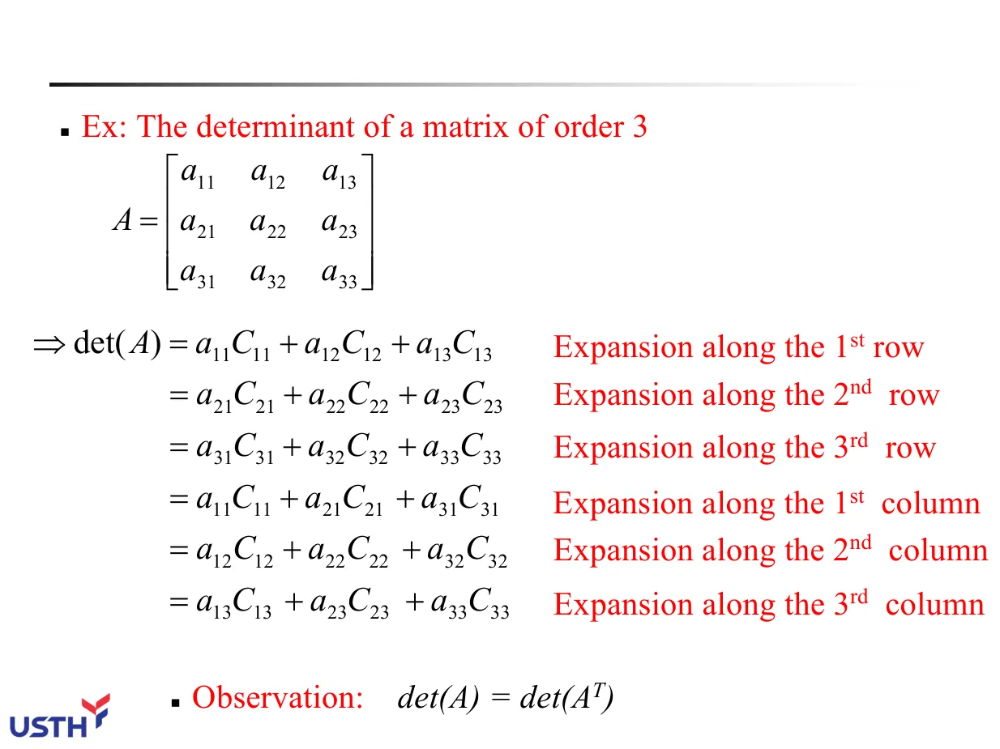
For $n=3$ there are six expansions: along the 1st, 2nd or 3rd row, or the 1st, 2nd or 3rd column, e.g. $\det A=a_{11}C_{11}+a_{12}C_{12}+a_{13}C_{13}$ (first row) or $=a_{11}C_{11}+a_{21}C_{21}+a_{31}C_{31}$ (first column). Observation: $\det(A)=\det(A^T)$, because expanding $A$ along a row is the same as expanding $A^T$ along the corresponding column.
Với $n=3$ có sáu cách khai triển: theo hàng 1, 2 hoặc 3, hoặc cột 1, 2 hoặc 3, ví dụ $\det A=a_{11}C_{11}+a_{12}C_{12}+a_{13}C_{13}$ (hàng một) hoặc $=a_{11}C_{11}+a_{21}C_{21}+a_{31}C_{31}$ (cột một). Quan sát: $\det(A)=\det(A^T)$, vì khai triển $A$ theo một hàng cũng như khai triển $A^T$ theo cột tương ứng.
For $A=\begin{bmatrix}2&1&0\\3&-1&4\\1&2&5\end{bmatrix}$ compute $\det A$ along row 1 and along column 3 and compare.
Với $A=\begin{bmatrix}2&1&0\\3&-1&4\\1&2&5\end{bmatrix}$ tính $\det A$ theo hàng 1 và theo cột 3 rồi so sánh.
Answer and solution · Đáp án và lời giải
Answer · Đáp án: $-37$ both ways
Row 1: $2\begin{vmatrix}-1&4\\2&5\end{vmatrix}-1\begin{vmatrix}3&4\\1&5\end{vmatrix}+0=2(-13)-11=-37$. Column 3: $0\cdot C_{13}+4C_{23}+5C_{33}=4(-3)+5(-5)=-12-25=-37$ (with $C_{23}=-\begin{vmatrix}2&1\\1&2\end{vmatrix}=-3$, $C_{33}=\begin{vmatrix}2&1\\3&-1\end{vmatrix}=-5$).
Hàng 1: $2\begin{vmatrix}-1&4\\2&5\end{vmatrix}-1\begin{vmatrix}3&4\\1&5\end{vmatrix}+0=2(-13)-11=-37$. Cột 3: $0\cdot C_{13}+4C_{23}+5C_{33}=4(-3)+5(-5)=-12-25=-37$ (với $C_{23}=-\begin{vmatrix}2&1\\1&2\end{vmatrix}=-3$, $C_{33}=\begin{vmatrix}2&1\\3&-1\end{vmatrix}=-5$).
Example 3: the same value six times · Ví dụ 3: cùng một giá trị sáu lần
★★★ Core · Cốt lõi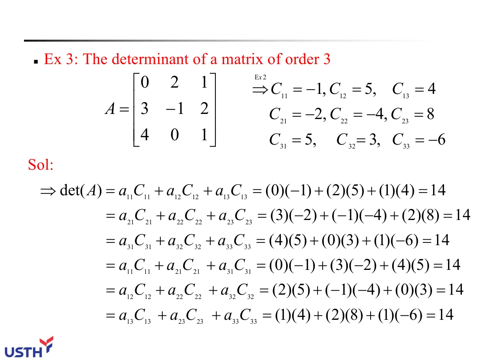
For $A=\begin{bmatrix}0&2&1\\3&-1&2\\4&0&1\end{bmatrix}$ with the cofactors of Example 2, all six expansions give $14$: row 1: $0(-1)+2(5)+1(4)$; row 2: $3(-2)+(-1)(-4)+2(8)$; row 3: $4(5)+0(3)+1(-6)$; column 1: $0(-1)+3(-2)+4(5)$; column 2: $2(5)+(-1)(-4)+0(3)$; column 3: $1(4)+2(8)+1(-6)$. This is a useful self-check.
Với $A=\begin{bmatrix}0&2&1\\3&-1&2\\4&0&1\end{bmatrix}$ và các phần bù đại số của Ví dụ 2, cả sáu cách khai triển đều cho $14$: hàng 1: $0(-1)+2(5)+1(4)$; hàng 2: $3(-2)+(-1)(-4)+2(8)$; hàng 3: $4(5)+0(3)+1(-6)$; cột 1: $0(-1)+3(-2)+4(5)$; cột 2: $2(5)+(-1)(-4)+0(3)$; cột 3: $1(4)+2(8)+1(-6)$. Đây là cách tự kiểm tra hữu ích.
Check that all six expansions of the slide's matrix equal $14$.
Kiểm tra cả sáu cách khai triển của ma trận trên slide đều bằng $14$.
Answer and solution · Đáp án và lời giải
Answer · Đáp án: all six equal $14$
Row 1: $0+10+4=14$; row 2: $-6+4+16=14$; row 3: $20+0-6=14$; column 1: $0-6+20=14$; column 2: $10+4+0=14$; column 3: $4+16-6=14$.
Hàng 1: $0+10+4=14$; hàng 2: $-6+4+16=14$; hàng 3: $20+0-6=14$; cột 1: $0-6+20=14$; cột 2: $10+4+0=14$; cột 3: $4+16-6=14$.
Example 5: expansion along the first row · Ví dụ 5: khai triển theo hàng một
★★ Important · Quan trọng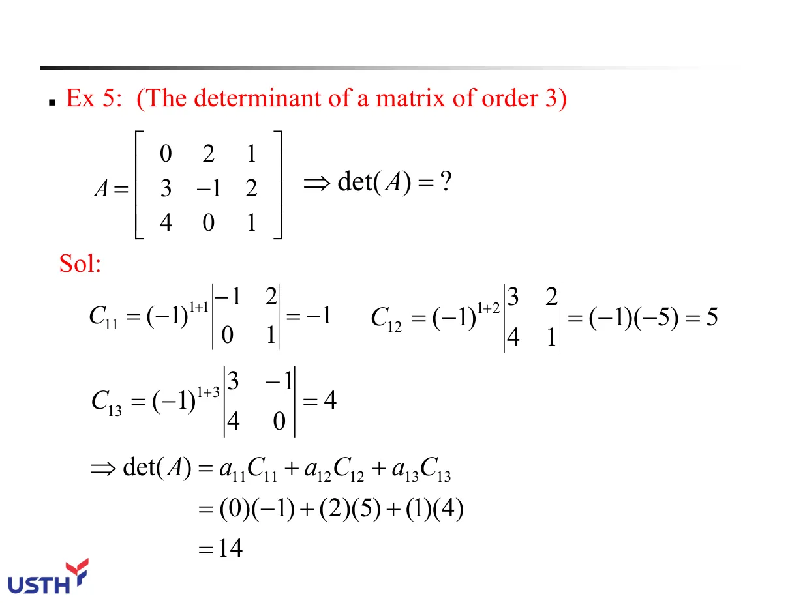
For the same matrix compute only the first-row cofactors: $C_{11}=(-1)^{1+1}\begin{vmatrix}-1&2\\0&1\end{vmatrix}=-1$, $C_{12}=(-1)^{1+2}\begin{vmatrix}3&2\\4&1\end{vmatrix}=(-1)(-5)=5$, $C_{13}=(-1)^{1+3}\begin{vmatrix}3&-1\\4&0\end{vmatrix}=4$. Then $\det A=0(-1)+2(5)+1(4)=14$. Because $a_{11}=0$, the first term vanishes and $C_{11}$ was not even needed.
Với cùng ma trận chỉ tính các phần bù đại số của hàng một: $C_{11}=(-1)^{1+1}\begin{vmatrix}-1&2\\0&1\end{vmatrix}=-1$, $C_{12}=(-1)^{1+2}\begin{vmatrix}3&2\\4&1\end{vmatrix}=(-1)(-5)=5$, $C_{13}=(-1)^{1+3}\begin{vmatrix}3&-1\\4&0\end{vmatrix}=4$. Khi đó $\det A=0(-1)+2(5)+1(4)=14$. Vì $a_{11}=0$ nên số hạng đầu triệt tiêu và không cần tính $C_{11}$.
Compute $\det\begin{bmatrix}3&0&2\\2&0&-2\\0&1&1\end{bmatrix}$ choosing the best column.
Tính $\det\begin{bmatrix}3&0&2\\2&0&-2\\0&1&1\end{bmatrix}$ bằng cách chọn cột tốt nhất.
Answer and solution · Đáp án và lời giải
Answer · Đáp án: $10$
Column 2 has a single nonzero entry $a_{32}=1$: $\det=1\cdot C_{32}=(-1)^{3+2}\begin{vmatrix}3&2\\2&-2\end{vmatrix}=-(-6-4)=10$.
Cột 2 chỉ có một phần tử khác không $a_{32}=1$: $\det=1\cdot C_{32}=(-1)^{3+2}\begin{vmatrix}3&2\\2&-2\end{vmatrix}=-(-6-4)=10$.
The best row or column; Example 4 ($4\times4$) · Hàng hoặc cột tốt nhất; Ví dụ 4 ($4\times4$)
★★★ Core · Cốt lõi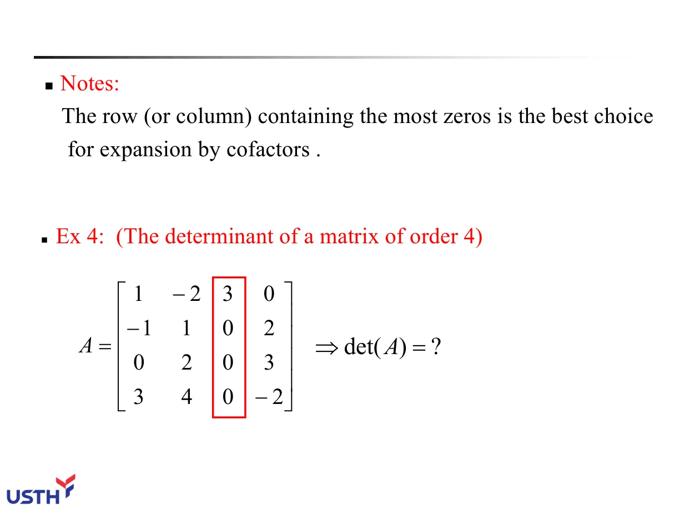
Note: the row or column containing the most zeros is the best choice for expansion. Example 4: $A=\begin{bmatrix}1&-2&3&0\\-1&1&0&2\\0&2&0&3\\3&4&0&-2\end{bmatrix}$. Column 3 is $(3,0,0,0)^T$: a single nonzero entry, so the whole determinant reduces to $3\,C_{13}$, one $3\times3$ determinant instead of four $3\times3$ ones.
Lưu ý: hàng hoặc cột chứa nhiều số không nhất là lựa chọn tốt nhất để khai triển. Ví dụ 4: $A=\begin{bmatrix}1&-2&3&0\\-1&1&0&2\\0&2&0&3\\3&4&0&-2\end{bmatrix}$. Cột 3 là $(3,0,0,0)^T$: chỉ một phần tử khác không, nên cả định thức rút về $3\,C_{13}$, một định thức $3\times3$ thay vì bốn định thức $3\times3$.
For $M=\begin{bmatrix}1&0&2&0\\3&0&1&4\\0&0&5&0\\2&1&0&3\end{bmatrix}$ which column do you expand along, and what is $\det M$?
Với $M=\begin{bmatrix}1&0&2&0\\3&0&1&4\\0&0&5&0\\2&1&0&3\end{bmatrix}$ khai triển theo cột nào, và $\det M$ bằng bao nhiêu?
Answer and solution · Đáp án và lời giải
Answer · Đáp án: column 2; $\det M=-20$
Column 2 is $(0,0,0,1)^T$, so $\det M=1\cdot C_{42}=(-1)^{4+2}\begin{vmatrix}1&2&0\\3&1&4\\0&5&0\end{vmatrix}$. Expanding that along its row 3 gives $5\cdot(-1)^{3+2}\begin{vmatrix}1&0\\3&4\end{vmatrix}=-5\cdot4=-20$.
Cột 2 là $(0,0,0,1)^T$ nên $\det M=1\cdot C_{42}=(-1)^{4+2}\begin{vmatrix}1&2&0\\3&1&4\\0&5&0\end{vmatrix}$. Khai triển định thức đó theo hàng 3 được $5\cdot(-1)^{3+2}\begin{vmatrix}1&0\\3&4\end{vmatrix}=-5\cdot4=-20$.
Example 4: the computation, $\det A=39$ · Ví dụ 4: tính toán, $\det A=39$
★★★ Core · Cốt lõi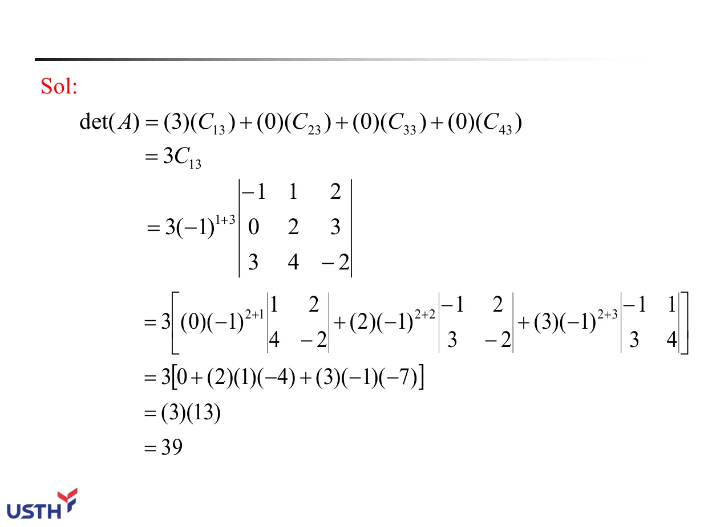
$\det A=3\,C_{13}=3(-1)^{1+3}\begin{vmatrix}-1&1&2\\0&2&3\\3&4&-2\end{vmatrix}$. Expand this $3\times3$ determinant along its first column: $-1\begin{vmatrix}2&3\\4&-2\end{vmatrix}+0+3\begin{vmatrix}1&2\\2&3\end{vmatrix}=-1(-4-12)+3(3-4)=16-3=13$. The slide expands along row 2 instead and gets the same $13$. Hence $\det A=3\cdot13=39$.
$\det A=3\,C_{13}=3(-1)^{1+3}\begin{vmatrix}-1&1&2\\0&2&3\\3&4&-2\end{vmatrix}$. Khai triển định thức $3\times3$ này theo cột một: $-1\begin{vmatrix}2&3\\4&-2\end{vmatrix}+0+3\begin{vmatrix}1&2\\2&3\end{vmatrix}=-1(-4-12)+3(3-4)=16-3=13$. Slide khai triển theo hàng 2 và cũng được $13$. Vậy $\det A=3\cdot13=39$.
Verify $\det A=39$ and the $3\times3$ minor value $13$.
Kiểm tra $\det A=39$ và giá trị định thức con $3\times3$ bằng $13$.
Answer and solution · Đáp án và lời giải
Answer · Đáp án: $\det A=39=3\cdot13$
$\begin{vmatrix}-1&1&2\\0&2&3\\3&4&-2\end{vmatrix}=-1(-4-12)-1(0-9)+2(0-6)=16+9-12=13$ (first-row expansion), and $3\cdot13=39$.
$\begin{vmatrix}-1&1&2\\0&2&3\\3&4&-2\end{vmatrix}=-1(-4-12)-1(0-9)+2(0-6)=16+9-12=13$ (khai triển hàng một), và $3\cdot13=39$.
The arrow rule for $3\times3$ determinants · Quy tắc mũi tên cho định thức $3\times3$
★★★ Core · Cốt lõi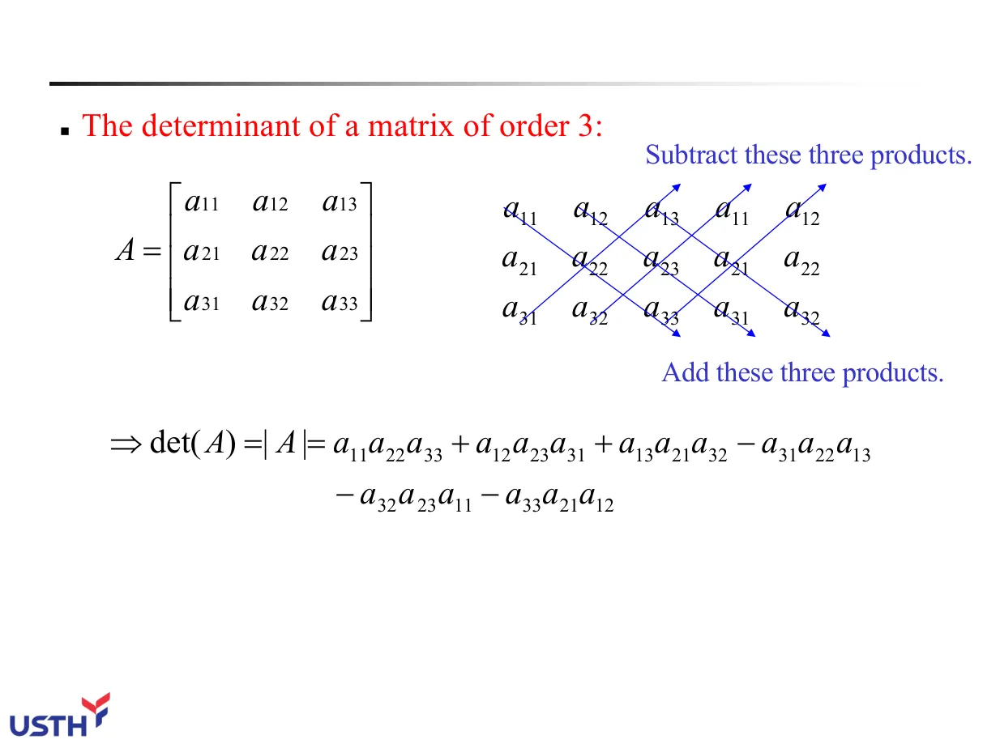
For order $3$ only: copy the first two columns to the right of the matrix; add the three products along the downward diagonals and subtract the three products along the upward diagonals: $\det A=a_{11}a_{22}a_{33}+a_{12}a_{23}a_{31}+a_{13}a_{21}a_{32}-a_{31}a_{22}a_{13}-a_{32}a_{23}a_{11}-a_{33}a_{21}a_{12}$. This trick does not work for $4\times4$ or larger matrices.
Chỉ với cấp $3$: chép hai cột đầu sang bên phải ma trận; cộng ba tích theo các đường chéo đi xuống và trừ ba tích theo các đường chéo đi lên: $\det A=a_{11}a_{22}a_{33}+a_{12}a_{23}a_{31}+a_{13}a_{21}a_{32}-a_{31}a_{22}a_{13}-a_{32}a_{23}a_{11}-a_{33}a_{21}a_{12}$. Mẹo này không dùng được cho ma trận $4\times4$ trở lên.
Use the arrow rule for $\begin{bmatrix}2&0&1\\1&3&2\\1&1&1\end{bmatrix}$ and confirm with a cofactor expansion.
Dùng quy tắc mũi tên cho $\begin{bmatrix}2&0&1\\1&3&2\\1&1&1\end{bmatrix}$ và xác nhận bằng khai triển phần bù đại số.
Answer and solution · Đáp án và lời giải
Answer · Đáp án: $0$
Down: $2\cdot3\cdot1+0\cdot2\cdot1+1\cdot1\cdot1=6+0+1=7$. Up: $1\cdot3\cdot1+1\cdot2\cdot2+1\cdot1\cdot0$, i.e. $a_{31}a_{22}a_{13}=3$, $a_{32}a_{23}a_{11}=4$, $a_{33}a_{21}a_{12}=0$: total $7$. So $\det=7-7=0$. Cofactor check along row 1: $2(3-2)-0+1(1-3)=2-2=0$.
Xuống: $2\cdot3\cdot1+0\cdot2\cdot1+1\cdot1\cdot1=6+0+1=7$. Lên: $a_{31}a_{22}a_{13}=3$, $a_{32}a_{23}a_{11}=4$, $a_{33}a_{21}a_{12}=0$: tổng $7$. Vậy $\det=7-7=0$. Kiểm tra phần bù đại số theo hàng 1: $2(3-2)-0+1(1-3)=2-2=0$.
Example 5: the arrow rule in action · Ví dụ 5: quy tắc mũi tên
★★★ Core · Cốt lõi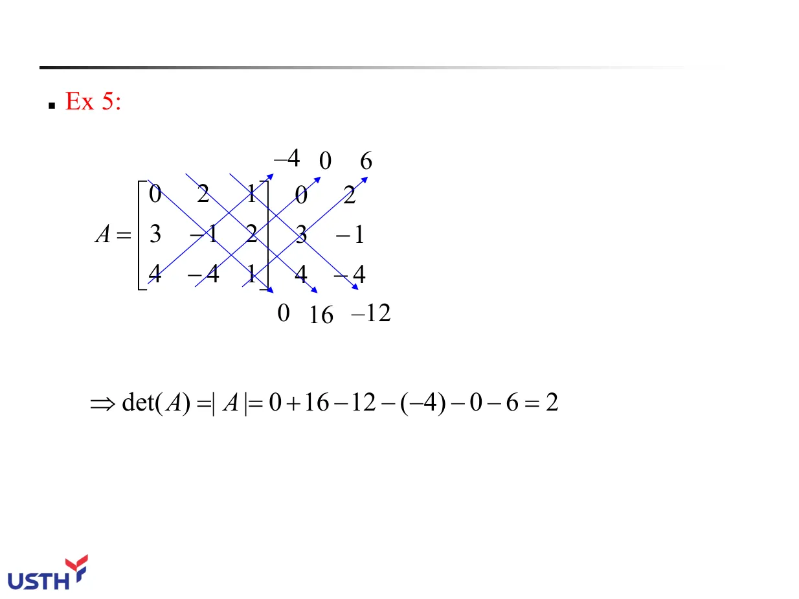
For $A=\begin{bmatrix}0&2&1\\3&-1&2\\4&-4&1\end{bmatrix}$ the downward products are $0$, $16$, $-12$ and the upward products are $-4$, $0$, $6$. So $\det A=0+16-12-(-4)-0-6=2$. Check by a cofactor expansion along row 1: $-2(3-8)+1(-12+4)=10-8=2$.
Với $A=\begin{bmatrix}0&2&1\\3&-1&2\\4&-4&1\end{bmatrix}$ các tích đi xuống là $0$, $16$, $-12$ và các tích đi lên là $-4$, $0$, $6$. Vậy $\det A=0+16-12-(-4)-0-6=2$. Kiểm tra bằng khai triển phần bù đại số theo hàng 1: $-2(3-8)+1(-12+4)=10-8=2$.
Compute $\det\begin{bmatrix}1&2&3\\4&5&6\\7&8&9\end{bmatrix}$ and explain the result.
Tính $\det\begin{bmatrix}1&2&3\\4&5&6\\7&8&9\end{bmatrix}$ và giải thích kết quả.
Answer and solution · Đáp án và lời giải
Answer · Đáp án: $0$
Down: $45+84+96=225$; up: $105+72+48=225$; $\det=0$. The rows are in arithmetic progression ($R_3-R_2=R_2-R_1$), so $R_3=2R_2-R_1$: dependent rows give a zero determinant.
Xuống: $45+84+96=225$; lên: $105+72+48=225$; $\det=0$. Các hàng lập thành cấp số cộng ($R_3-R_2=R_2-R_1$) nên $R_3=2R_2-R_1$: các hàng phụ thuộc cho định thức bằng không.
Triangular and diagonal matrices · Ma trận tam giác và ma trận chéo
★★★ Core · Cốt lõi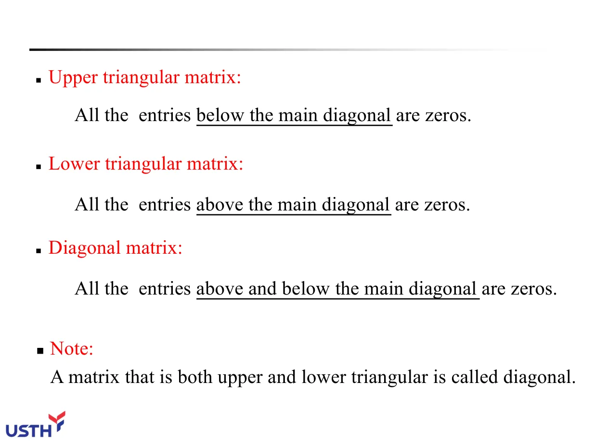
Upper triangular: all entries below the main diagonal are zero. Lower triangular: all entries above the main diagonal are zero. Diagonal: all entries above and below the main diagonal are zero. A matrix that is both upper and lower triangular is diagonal.
Tam giác trên: mọi phần tử dưới đường chéo chính bằng không. Tam giác dưới: mọi phần tử trên đường chéo chính bằng không. Chéo: mọi phần tử trên và dưới đường chéo chính bằng không. Ma trận vừa tam giác trên vừa tam giác dưới là ma trận chéo.
Classify $\begin{bmatrix}1&2&3\\0&4&5\\0&0&6\end{bmatrix}$, $\begin{bmatrix}1&0&0\\2&3&0\\4&5&6\end{bmatrix}$ and $\begin{bmatrix}1&0\\0&2\end{bmatrix}$.
Phân loại $\begin{bmatrix}1&2&3\\0&4&5\\0&0&6\end{bmatrix}$, $\begin{bmatrix}1&0&0\\2&3&0\\4&5&6\end{bmatrix}$ và $\begin{bmatrix}1&0\\0&2\end{bmatrix}$.
Answer and solution · Đáp án và lời giải
Answer · Đáp án: upper triangular; lower triangular; diagonal (both)
The first has zeros below the diagonal, the second zeros above it, the third has zeros on both sides so it is upper, lower and diagonal at once.
Ma trận đầu có số không dưới đường chéo, ma trận hai có số không trên đường chéo, ma trận ba có số không cả hai phía nên nó vừa tam giác trên, tam giác dưới và chéo.
Examples of the three shapes · Ví dụ của ba dạng
★★ Important · Quan trọng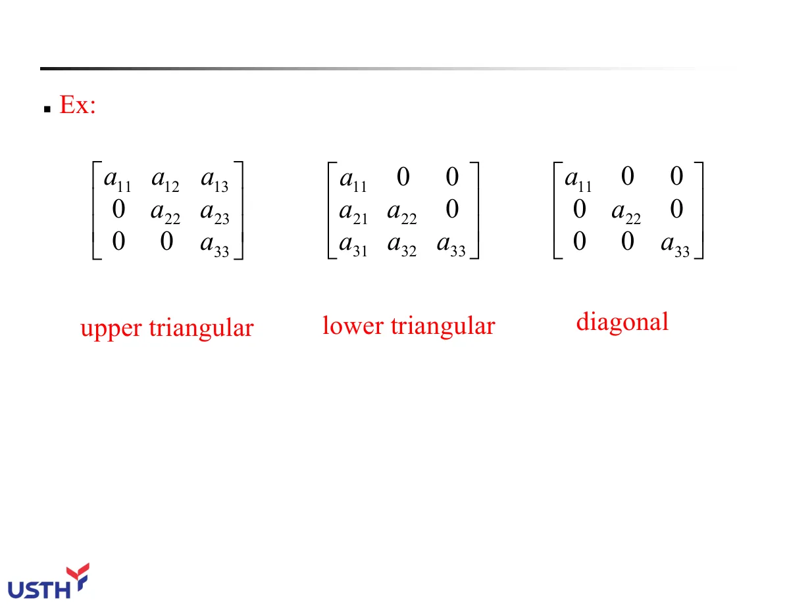
The slide displays the general pattern of the three shapes: the upper triangular matrix has $a_{11},a_{12},a_{13},a_{22},a_{23},a_{33}$ possibly nonzero; the lower triangular has $a_{11},a_{21},a_{22},a_{31},a_{32},a_{33}$ possibly nonzero; the diagonal has only $a_{11},a_{22},a_{33}$. Note that the entries on the diagonal may be zero in all three.
Slide trình bày dạng tổng quát của ba loại: ma trận tam giác trên có thể khác không ở $a_{11},a_{12},a_{13},a_{22},a_{23},a_{33}$; ma trận tam giác dưới có thể khác không ở $a_{11},a_{21},a_{22},a_{31},a_{32},a_{33}$; ma trận chéo chỉ có $a_{11},a_{22},a_{33}$. Lưu ý các phần tử trên đường chéo có thể bằng không ở cả ba loại.
Show that the product of two upper triangular matrices is upper triangular: test $\begin{bmatrix}1&2\\0&3\end{bmatrix}\begin{bmatrix}4&5\\0&6\end{bmatrix}$.
Chứng tỏ tích của hai ma trận tam giác trên là tam giác trên: kiểm tra $\begin{bmatrix}1&2\\0&3\end{bmatrix}\begin{bmatrix}4&5\\0&6\end{bmatrix}$.
Answer and solution · Đáp án và lời giải
Answer · Đáp án: $\begin{bmatrix}4&17\\0&18\end{bmatrix}$, upper triangular
Entry $(2,1)$ is $0\cdot4+3\cdot0=0$; the others are $1\cdot4=4$, $1\cdot5+2\cdot6=17$, $3\cdot6=18$. In general the $(i,j)$ entry with $i>j$ is a sum of products each containing a zero from below the diagonal.
Phần tử $(2,1)$ là $0\cdot4+3\cdot0=0$; các phần tử khác là $1\cdot4=4$, $1\cdot5+2\cdot6=17$, $3\cdot6=18$. Tổng quát phần tử $(i,j)$ với $i>j$ là tổng các tích mà mỗi tích đều chứa một số không từ phía dưới đường chéo.
Theorem 3.2: determinant of a triangular matrix · Định lý 3.2: định thức của ma trận tam giác
★★★ Core · Cốt lõi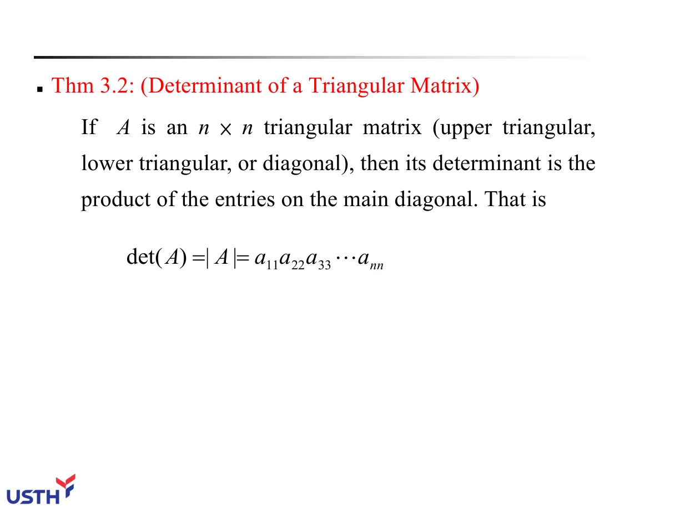
Theorem 3.2. If $A$ is an $n\times n$ triangular matrix (upper, lower or diagonal), then $\det A=a_{11}a_{22}a_{33}\cdots a_{nn}$: the product of the main-diagonal entries. Proof idea: expand repeatedly along the first column (upper triangular), where only the top entry is nonzero. This is the reason row reduction computes determinants.
Định lý 3.2. Nếu $A$ là ma trận tam giác $n\times n$ (trên, dưới hoặc chéo) thì $\det A=a_{11}a_{22}a_{33}\cdots a_{nn}$: tích các phần tử trên đường chéo chính. Ý chứng minh: khai triển liên tiếp theo cột một (tam giác trên), nơi chỉ phần tử trên cùng khác không. Đây là lý do khử hàng tính được định thức.
Find $\det\begin{bmatrix}2&5&-1\\0&3&4\\0&0&-2\end{bmatrix}$ and $\det\operatorname{diag}(1,2,3,4,5)$.
Tìm $\det\begin{bmatrix}2&5&-1\\0&3&4\\0&0&-2\end{bmatrix}$ và $\det\operatorname{diag}(1,2,3,4,5)$.
Answer and solution · Đáp án và lời giải
Answer · Đáp án: $-12$ and $120$
Product of the diagonal entries: $2\cdot3\cdot(-2)=-12$ and $1\cdot2\cdot3\cdot4\cdot5=120$. The entries off the diagonal ($5,-1,4$) are irrelevant.
Tích các phần tử trên đường chéo: $2\cdot3\cdot(-2)=-12$ và $1\cdot2\cdot3\cdot4\cdot5=120$. Các phần tử ngoài đường chéo ($5,-1,4$) không liên quan.
Example 6: triangular determinants · Ví dụ 6: định thức ma trận tam giác
★★★ Core · Cốt lõi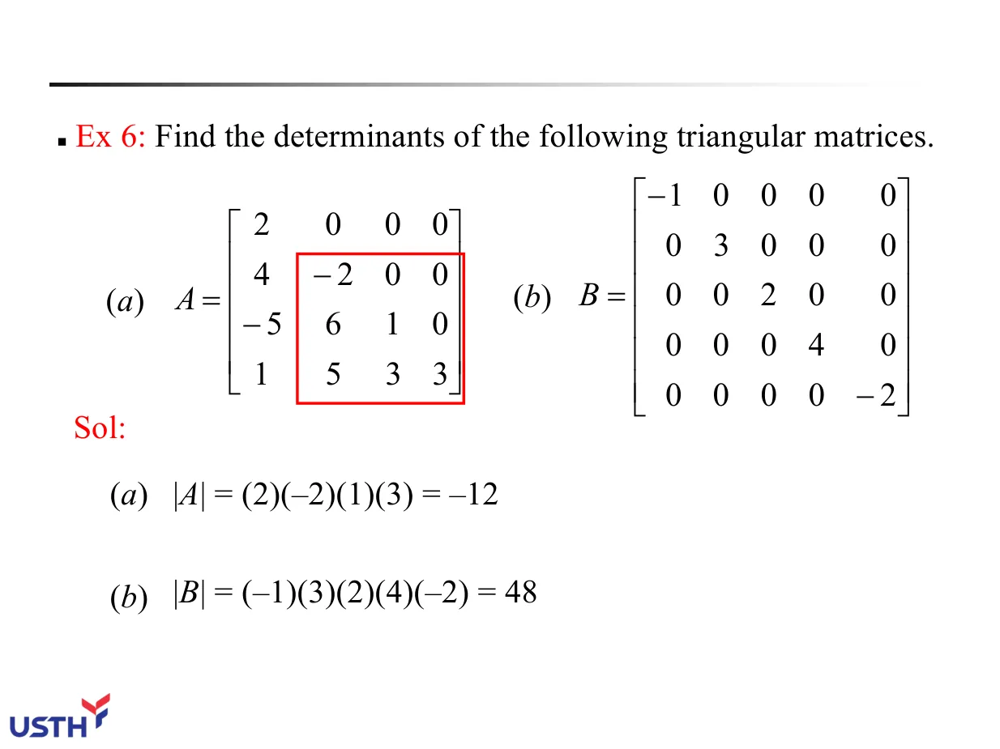
(a) $A=\begin{bmatrix}2&0&0&0\\4&-2&0&0\\-5&6&1&0\\1&5&3&3\end{bmatrix}$ is lower triangular: $|A|=(2)(-2)(1)(3)=-12$. (b) $B=\operatorname{diag}(-1,3,2,4,-2)$ is diagonal: $|B|=(-1)(3)(2)(4)(-2)=48$. No expansion is needed.
(a) $A=\begin{bmatrix}2&0&0&0\\4&-2&0&0\\-5&6&1&0\\1&5&3&3\end{bmatrix}$ là tam giác dưới: $|A|=(2)(-2)(1)(3)=-12$. (b) $B=\operatorname{diag}(-1,3,2,4,-2)$ là ma trận chéo: $|B|=(-1)(3)(2)(4)(-2)=48$. Không cần khai triển.
Verify both determinants of the slide.
Kiểm tra cả hai định thức của slide.
Answer and solution · Đáp án và lời giải
Answer · Đáp án: $-12$ and $48$
Lower triangular and diagonal matrices: multiply the diagonal. $2\cdot(-2)\cdot1\cdot3=-12$; $(-1)\cdot3\cdot2\cdot4\cdot(-2)=48$ (two negative factors give a positive sign).
Ma trận tam giác dưới và ma trận chéo: nhân các phần tử đường chéo. $2\cdot(-2)\cdot1\cdot3=-12$; $(-1)\cdot3\cdot2\cdot4\cdot(-2)=48$ (hai thừa số âm cho dấu dương).
3.2 Elementary matrices · 3.2 Ma trận sơ cấp
★★★ Core · Cốt lõi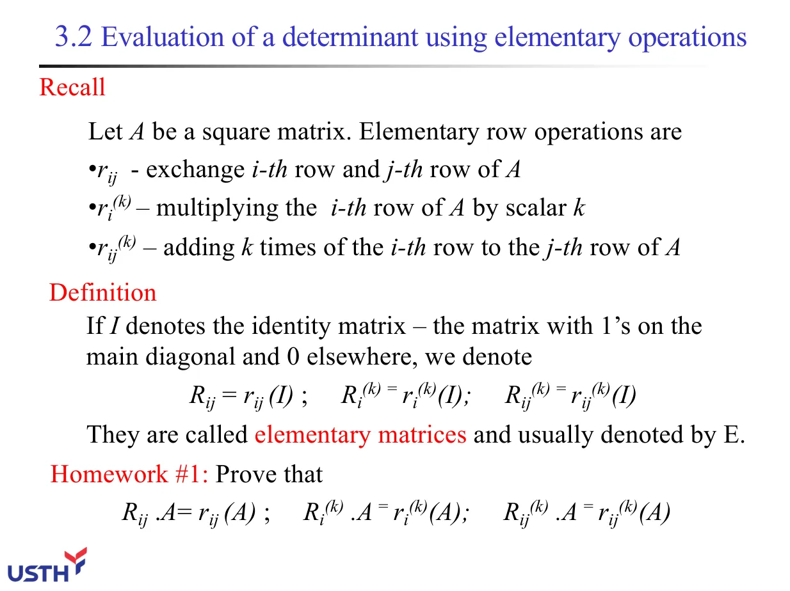
Recall the three row operations: $r_{ij}$ (swap rows $i$ and $j$), $r_i^{(k)}$ (multiply row $i$ by $k$), $r_{ij}^{(k)}$ (add $k$ times row $i$ to row $j$). Applying the operation to the identity $I$ gives an elementary matrix $E$: $R_{ij}=r_{ij}(I)$, $R_i^{(k)}=r_i^{(k)}(I)$, $R_{ij}^{(k)}=r_{ij}^{(k)}(I)$. Homework 1 of the slide: prove $R_{ij}A=r_{ij}(A)$ and the same for the other two, i.e. multiplying on the left by $E$ performs the row operation.
Nhắc lại ba phép biến đổi hàng: $r_{ij}$ (đổi chỗ hàng $i$ và $j$), $r_i^{(k)}$ (nhân hàng $i$ với $k$), $r_{ij}^{(k)}$ (cộng $k$ lần hàng $i$ vào hàng $j$). Áp dụng phép biến đổi lên ma trận đơn vị $I$ cho ma trận sơ cấp $E$: $R_{ij}=r_{ij}(I)$, $R_i^{(k)}=r_i^{(k)}(I)$, $R_{ij}^{(k)}=r_{ij}^{(k)}(I)$. Bài tập về nhà 1 của slide: chứng minh $R_{ij}A=r_{ij}(A)$ và tương tự cho hai phép còn lại, tức là nhân bên trái với $E$ thực hiện phép biến đổi hàng.
For $A=\begin{bmatrix}1&2&3\\4&5&6\\7&8&10\end{bmatrix}$ and $E=\begin{bmatrix}1&0&0\\0&1&0\\-2&0&1\end{bmatrix}$ show that $EA$ is $A$ with $R_3\to R_3-2R_1$.
Với $A=\begin{bmatrix}1&2&3\\4&5&6\\7&8&10\end{bmatrix}$ và $E=\begin{bmatrix}1&0&0\\0&1&0\\-2&0&1\end{bmatrix}$ chứng tỏ $EA$ là $A$ sau phép $R_3\to R_3-2R_1$.
Answer and solution · Đáp án và lời giải
Answer · Đáp án: $EA=\begin{bmatrix}1&2&3\\4&5&6\\5&4&4\end{bmatrix}$
Rows 1 and 2 of $EA$ are those of $A$ (rows 1 and 2 of $E$ are $(1,0,0)$ and $(0,1,0)$). Row 3 is $-2(1,2,3)+(7,8,10)=(5,4,4)$: exactly $R_3-2R_1$.
Hàng 1 và 2 của $EA$ là của $A$ (hàng 1 và 2 của $E$ là $(1,0,0)$ và $(0,1,0)$). Hàng 3 là $-2(1,2,3)+(7,8,10)=(5,4,4)$: đúng là $R_3-2R_1$.
The matrices $I_n$ and $R_{ij}$ · Các ma trận $I_n$ và $R_{ij}$
★★ Important · Quan trọng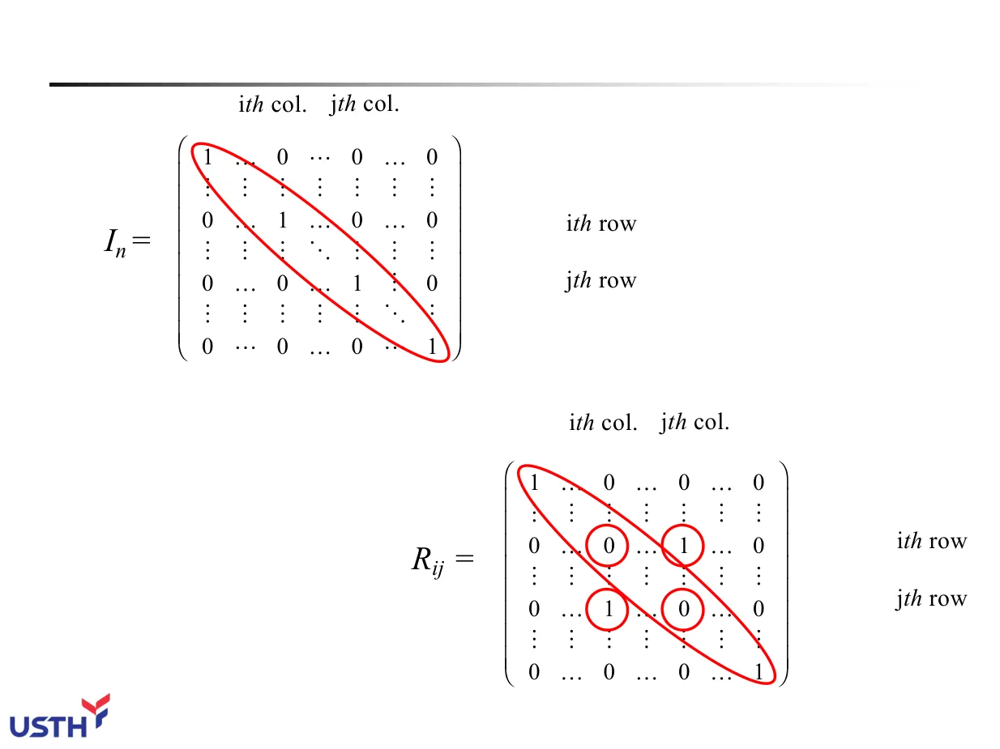
The figure shows $I_n$ and $R_{ij}$, which is $I_n$ with rows $i$ and $j$ swapped: the entries $(i,i)$ and $(j,j)$ become $0$ and the entries $(i,j)$ and $(j,i)$ become $1$. So the matrix that swaps two rows is a permutation of the identity.
Hình cho thấy $I_n$ và $R_{ij}$, là $I_n$ với hai hàng $i$ và $j$ đổi chỗ: các phần tử $(i,i)$ và $(j,j)$ thành $0$ còn các phần tử $(i,j)$ và $(j,i)$ thành $1$. Vậy ma trận đổi chỗ hai hàng là một hoán vị của ma trận đơn vị.
What is $\det\begin{bmatrix}0&1&0\\1&0&0\\0&0&1\end{bmatrix}$? What does this say about the effect of a row swap on a determinant?
$\det\begin{bmatrix}0&1&0\\1&0&0\\0&0&1\end{bmatrix}$ bằng bao nhiêu? Điều này cho biết gì về tác động của phép đổi chỗ hàng lên định thức?
Answer and solution · Đáp án và lời giải
Answer · Đáp án: $-1$; a swap changes the sign
Expanding along row 3 gives $1\cdot\begin{vmatrix}0&1\\1&0\end{vmatrix}=-1$. Since $R_{12}A=r_{12}(A)$ and $\det(R_{12}A)=\det R_{12}\det A$, a row swap multiplies the determinant by $-1$.
Khai triển theo hàng 3 được $1\cdot\begin{vmatrix}0&1\\1&0\end{vmatrix}=-1$. Vì $R_{12}A=r_{12}(A)$ và $\det(R_{12}A)=\det R_{12}\det A$ nên đổi chỗ hàng nhân định thức với $-1$.
The matrices $R_i^{(k)}$ and $R_{ij}^{(k)}$ · Các ma trận $R_i^{(k)}$ và $R_{ij}^{(k)}$
★★ Important · Quan trọng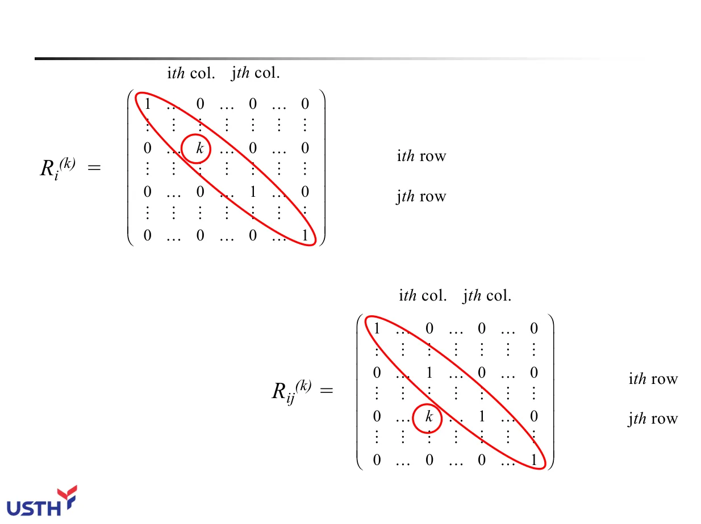
$R_i^{(k)}$ is $I_n$ with the $i$-th diagonal entry replaced by $k$ (it multiplies row $i$ by $k$). $R_{ij}^{(k)}$ is $I_n$ with the extra entry $k$ in position $(j,i)$ (it adds $k$ times row $i$ to row $j$). Both are triangular or diagonal, so their determinants are read off the diagonal: $\det R_i^{(k)}=k$ and $\det R_{ij}^{(k)}=1$.
$R_i^{(k)}$ là $I_n$ với phần tử chéo thứ $i$ thay bằng $k$ (nó nhân hàng $i$ với $k$). $R_{ij}^{(k)}$ là $I_n$ có thêm phần tử $k$ ở vị trí $(j,i)$ (nó cộng $k$ lần hàng $i$ vào hàng $j$). Cả hai đều tam giác hoặc chéo nên định thức đọc ngay từ đường chéo: $\det R_i^{(k)}=k$ và $\det R_{ij}^{(k)}=1$.
Find $\det R_2^{(5)}$ and $\det R_{13}^{(-2)}$ for $3\times3$ matrices.
Tìm $\det R_2^{(5)}$ và $\det R_{13}^{(-2)}$ cho ma trận $3\times3$.
Answer and solution · Đáp án và lời giải
Answer · Đáp án: $5$ and $1$
$R_2^{(5)}=\operatorname{diag}(1,5,1)$ has determinant $5$. $R_{13}^{(-2)}=\begin{bmatrix}1&0&0\\0&1&0\\-2&0&1\end{bmatrix}$ is lower triangular with diagonal $1,1,1$: determinant $1$.
$R_2^{(5)}=\operatorname{diag}(1,5,1)$ có định thức $5$. $R_{13}^{(-2)}=\begin{bmatrix}1&0&0\\0&1&0\\-2&0&1\end{bmatrix}$ là tam giác dưới với đường chéo $1,1,1$: định thức $1$.
Theorem 3.3: elementary row operations and determinants · Định lý 3.3: phép biến đổi sơ cấp theo hàng và định thức
★★★ Core · Cốt lõi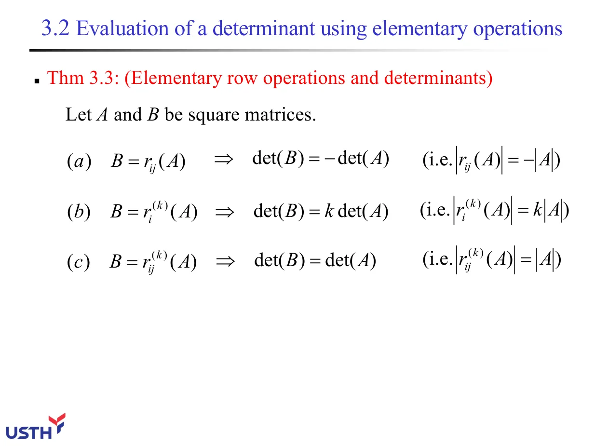
Theorem 3.3. Let $A$ and $B$ be square matrices. (a) $B=r_{ij}(A)$ (swap two rows) $\Rightarrow\det B=-\det A$. (b) $B=r_i^{(k)}(A)$ (multiply a row by $k$) $\Rightarrow\det B=k\det A$. (c) $B=r_{ij}^{(k)}(A)$ (add a multiple of a row to another row) $\Rightarrow\det B=\det A$. So only the first two change the determinant; the third, the workhorse of elimination, does not.
Định lý 3.3. Cho $A$ và $B$ là ma trận vuông. (a) $B=r_{ij}(A)$ (đổi chỗ hai hàng) $\Rightarrow\det B=-\det A$. (b) $B=r_i^{(k)}(A)$ (nhân một hàng với $k$) $\Rightarrow\det B=k\det A$. (c) $B=r_{ij}^{(k)}(A)$ (cộng bội của một hàng vào hàng khác) $\Rightarrow\det B=\det A$. Vậy chỉ hai phép đầu làm đổi định thức; phép thứ ba, công cụ chính của phép khử, không làm đổi.
This theorem is the whole method of 3.2: reduce to triangular form, then correct for each swap ($\times(-1)$) and each scaling ($\div k$).
Định lý này là toàn bộ phương pháp của 3.2: rút gọn về dạng tam giác, rồi hiệu chỉnh cho mỗi phép đổi chỗ ($\times(-1)$) và mỗi phép nhân hàng ($\div k$).
Let $A=\begin{bmatrix}1&0&3\\0&-1&2\\2&1&0\end{bmatrix}$ ($\det A=4$). Give $\det B$ for (a) $B$ = rows 1,2 swapped, (b) $B$ = row 2 multiplied by $3$, (c) $B$ = $R_3+5R_1$ in place of $R_3$.
Cho $A=\begin{bmatrix}1&0&3\\0&-1&2\\2&1&0\end{bmatrix}$ ($\det A=4$). Cho $\det B$ khi (a) $B$ = đổi chỗ hàng 1,2, (b) $B$ = nhân hàng 2 với $3$, (c) $B$ = thay $R_3$ bằng $R_3+5R_1$.
Answer and solution · Đáp án và lời giải
Answer · Đáp án: (a) $-4$, (b) $12$, (c) $4$
(a) a swap changes the sign: $-4$. (b) scaling one row by $3$ multiplies $\det$ by $3$: $12$. (c) adding a multiple of one row to another leaves $\det$ unchanged: $4$.
(a) đổi chỗ đổi dấu: $-4$. (b) nhân một hàng với $3$ nhân $\det$ với $3$: $12$. (c) cộng bội của một hàng vào hàng khác giữ nguyên $\det$: $4$.
Example: the three operations on a concrete matrix · Ví dụ: ba phép biến đổi trên một ma trận cụ thể
★★★ Core · Cốt lõi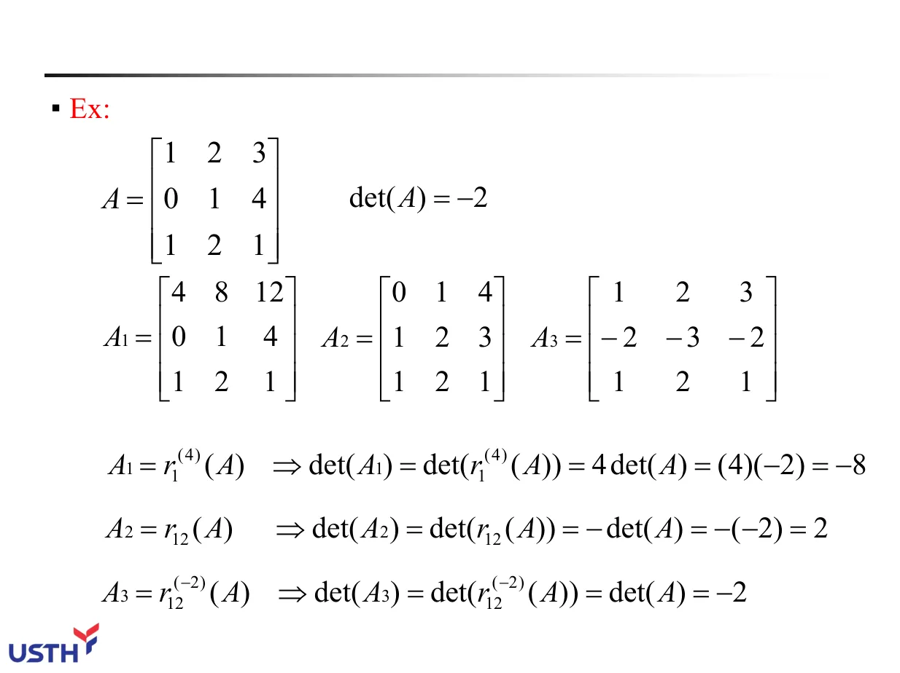
$A=\begin{bmatrix}1&2&3\\0&1&4\\1&2&1\end{bmatrix}$ has $\det A=-2$. $A_1=r_1^{(4)}(A)$ (row 1 times $4$) has $\det A_1=4(-2)=-8$. $A_2=r_{12}(A)$ (swap rows 1,2) has $\det A_2=-(-2)=2$. $A_3=r_{12}^{(-2)}(A)$ (add $-2R_1$ to $R_2$) has $\det A_3=\det A=-2$.
$A=\begin{bmatrix}1&2&3\\0&1&4\\1&2&1\end{bmatrix}$ có $\det A=-2$. $A_1=r_1^{(4)}(A)$ (hàng 1 nhân $4$) có $\det A_1=4(-2)=-8$. $A_2=r_{12}(A)$ (đổi chỗ hàng 1,2) có $\det A_2=-(-2)=2$. $A_3=r_{12}^{(-2)}(A)$ (cộng $-2R_1$ vào $R_2$) có $\det A_3=\det A=-2$.
Verify the four determinants of the slide.
Kiểm tra bốn định thức của slide.
Answer and solution · Đáp án và lời giải
Answer · Đáp án: $-2,\ -8,\ 2,\ -2$
$\det A=1(1-8)-2(0-4)+3(0-1)=-7+8-3=-2$. $A_1$ has first row $(4,8,12)$: $-8$. $A_2$ swaps the first two rows: $2$. $A_3$ has second row $(-2,-3,-2)$: $-2$ again.
$\det A=1(1-8)-2(0-4)+3(0-1)=-7+8-3=-2$. $A_1$ có hàng đầu $(4,8,12)$: $-8$. $A_2$ đổi chỗ hai hàng đầu: $2$. $A_3$ có hàng hai $(-2,-3,-2)$: lại $-2$.
Summary (P): going back to $\det A$ · Tóm tắt (P): quay lại tính $\det A$
★★★ Core · Cốt lõi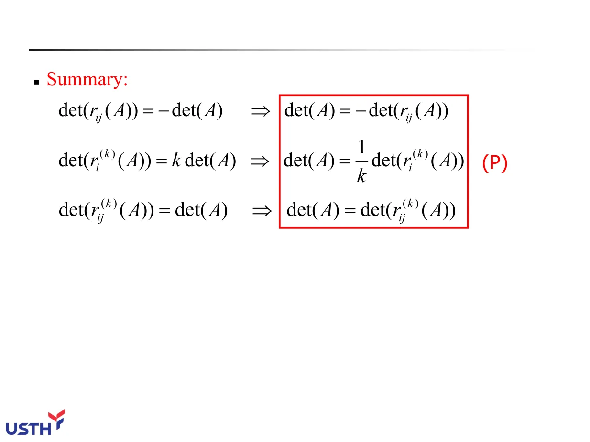
Reading Theorem 3.3 backwards gives rules to recover $\det A$ from the determinant of the modified matrix: $\det A=-\det(r_{ij}(A))$; $\det A=\frac1k\det(r_i^{(k)}(A))$; $\det A=\det(r_{ij}^{(k)}(A))$. These are the corrections applied, one per row operation, in step 3 of the method on the next slide.
Đọc Định lý 3.3 ngược lại cho các quy tắc khôi phục $\det A$ từ định thức của ma trận đã biến đổi: $\det A=-\det(r_{ij}(A))$; $\det A=\frac1k\det(r_i^{(k)}(A))$; $\det A=\det(r_{ij}^{(k)}(A))$. Đây là các hiệu chỉnh, mỗi phép biến đổi hàng một hiệu chỉnh, ở bước 3 của phương pháp ở slide sau.
A square matrix $A$ is reduced to an upper triangular $U$ with diagonal $1,2,3$ by one swap, then $r_2^{(1/2)}$, then only type-(c) operations. Find $\det A$.
Ma trận vuông $A$ được rút gọn về tam giác trên $U$ với đường chéo $1,2,3$ bằng một phép đổi chỗ, rồi $r_2^{(1/2)}$, rồi chỉ các phép loại (c). Tìm $\det A$.
Answer and solution · Đáp án và lời giải
Answer · Đáp án: $\det A=-12$
$\det U=1\cdot2\cdot3=6$. Going from $A$ to $U$: swap gives $\times(-1)$, scaling a row by $\frac12$ gives $\times\frac12$, type (c) gives $\times1$, so $6=(-1)\cdot\frac12\cdot\det A$, i.e. $\det A=6\cdot(-2)=-12$.
$\det U=1\cdot2\cdot3=6$. Từ $A$ đến $U$: đổi chỗ cho $\times(-1)$, nhân một hàng với $\frac12$ cho $\times\frac12$, loại (c) cho $\times1$, nên $6=(-1)\cdot\frac12\cdot\det A$, tức $\det A=6\cdot(-2)=-12$.
Method: determinants by row reduction · Phương pháp: tính định thức bằng khử hàng
★★★ Core · Cốt lõi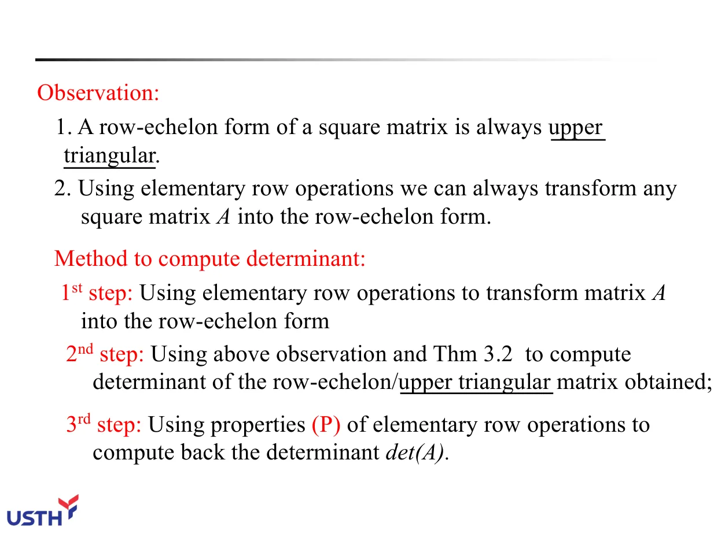
Observation: a row-echelon form of a square matrix is always upper triangular, and elementary row operations can always bring any square matrix to row-echelon form. Method: (1) reduce $A$ to row-echelon form with elementary row operations; (2) read the determinant of the resulting upper triangular matrix with Theorem 3.2 (product of the diagonal); (3) use the rules (P) to return to $\det A$ (undo each swap's sign and each scaling).
Quan sát: dạng bậc thang của ma trận vuông luôn là tam giác trên, và phép biến đổi sơ cấp theo hàng luôn đưa được mọi ma trận vuông về dạng bậc thang. Phương pháp: (1) rút gọn $A$ về dạng bậc thang bằng phép biến đổi sơ cấp theo hàng; (2) đọc định thức của ma trận tam giác trên nhận được bằng Định lý 3.2 (tích đường chéo); (3) dùng các quy tắc (P) để quay về $\det A$ (hoàn lại dấu của mỗi phép đổi chỗ và mỗi phép nhân hàng).
Find $\det\begin{bmatrix}1&2&3\\2&5&7\\3&7&11\end{bmatrix}$ using only operations of type (c).
Tìm $\det\begin{bmatrix}1&2&3\\2&5&7\\3&7&11\end{bmatrix}$ chỉ dùng phép biến đổi loại (c).
Answer and solution · Đáp án và lời giải
Answer · Đáp án: $1$
$R_2-2R_1\to(0,1,1)$, $R_3-3R_1\to(0,1,2)$, $R_3-R_2\to(0,0,1)$: the triangular matrix has diagonal $1,1,1$ and all operations were type (c), so $\det A=1$.
$R_2-2R_1\to(0,1,1)$, $R_3-3R_1\to(0,1,2)$, $R_3-R_2\to(0,0,1)$: ma trận tam giác có đường chéo $1,1,1$ và mọi phép đều thuộc loại (c) nên $\det A=1$.
Example 2: a determinant by row operations · Ví dụ 2: tính định thức bằng phép biến đổi hàng
★★★ Core · Cốt lõi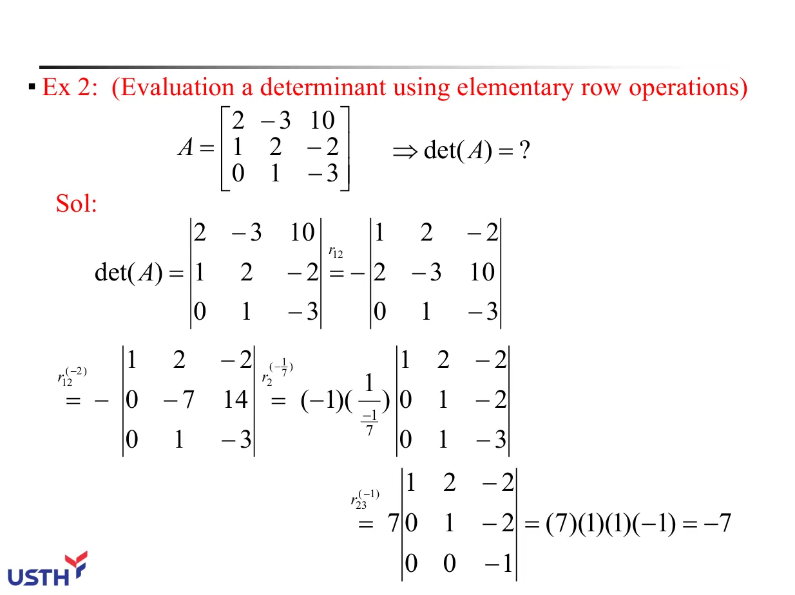
$A=\begin{bmatrix}2&-3&10\\1&2&-2\\0&1&-3\end{bmatrix}$. Swap rows 1 and 2 (factor $-1$); $r_{12}^{(-2)}$ clears the entry below; then $r_2^{(-1/7)}$ scales the second row $(0,-7,14)$ to $(0,1,-2)$; $r_{23}^{(-1)}$ clears the next entry. The final triangular matrix has diagonal $1,1,-1$. Collecting the corrections: $\det A=(-1)\cdot\frac1{-1/7}\cdot(1)(1)(-1)=-7$.
$A=\begin{bmatrix}2&-3&10\\1&2&-2\\0&1&-3\end{bmatrix}$. Đổi chỗ hàng 1 và 2 (hệ số $-1$); $r_{12}^{(-2)}$ khử phần tử bên dưới; rồi $r_2^{(-1/7)}$ chia hàng hai $(0,-7,14)$ thành $(0,1,-2)$; $r_{23}^{(-1)}$ khử phần tử kế tiếp. Ma trận tam giác cuối có đường chéo $1,1,-1$. Gộp các hiệu chỉnh: $\det A=(-1)\cdot\frac1{-1/7}\cdot(1)(1)(-1)=-7$.
Check $\det A=-7$ and compute $\det\begin{bmatrix}0&2&4\\1&1&1\\2&0&3\end{bmatrix}$ by row operations.
Kiểm tra $\det A=-7$ và tính $\det\begin{bmatrix}0&2&4\\1&1&1\\2&0&3\end{bmatrix}$ bằng phép biến đổi hàng.
Answer and solution · Đáp án và lời giải
Answer · Đáp án: $-7$ and $-10$
Second matrix: swap $R_1,R_2$ (factor $-1$) to get rows $(1,1,1),(0,2,4),(2,0,3)$; $R_3-2R_1\to(0,-2,1)$; $R_3+R_2\to(0,0,5)$. Triangular with diagonal $1,2,5$, product $10$; with the swap, $\det=-10$ (matches a cofactor check: $-2(3-2)+4(0-2)=-10$).
Ma trận thứ hai: đổi chỗ $R_1,R_2$ (hệ số $-1$) được các hàng $(1,1,1),(0,2,4),(2,0,3)$; $R_3-2R_1\to(0,-2,1)$; $R_3+R_2\to(0,0,5)$. Tam giác với đường chéo $1,2,5$, tích $10$; kể cả phép đổi chỗ, $\det=-10$ (khớp phép kiểm tra phần bù đại số: $-2(3-2)+4(0-2)=-10$).
Elementary matrices and determinants: $|EA|=|E||A|$ · Ma trận sơ cấp và định thức: $|EA|=|E||A|$
★★★ Core · Cốt lõi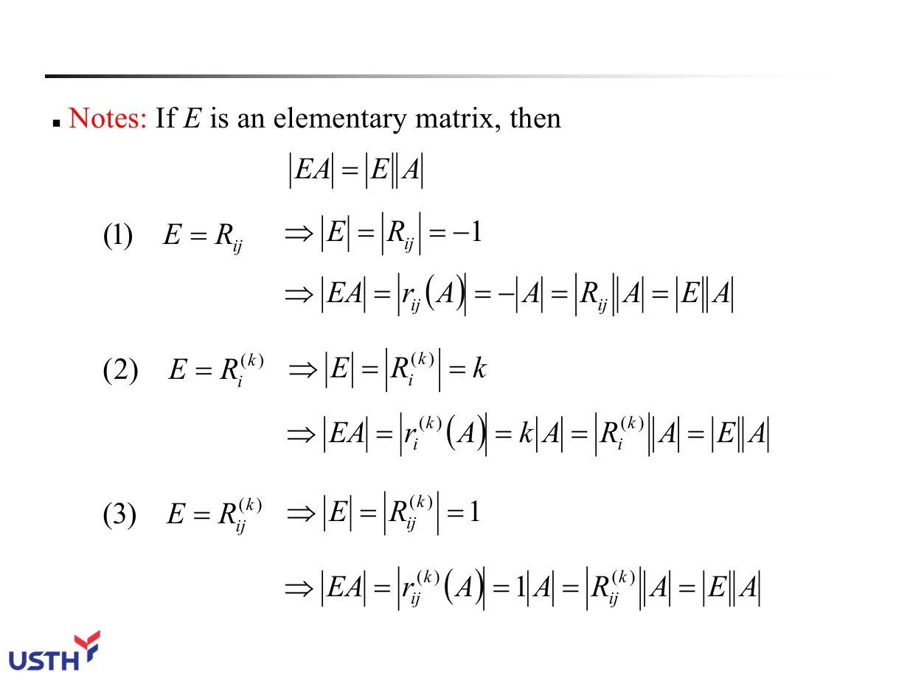
Notes: if $E$ is an elementary matrix then $|EA|=|E||A|$. (1) $E=R_{ij}$: $|E|=-1$ and $|EA|=|r_{ij}(A)|=-|A|=|E||A|$. (2) $E=R_i^{(k)}$: $|E|=k$ and $|EA|=k|A|=|E||A|$. (3) $E=R_{ij}^{(k)}$: $|E|=1$ and $|EA|=|A|=|E||A|$. This is the first case of the product rule $\det(AB)=\det A\det B$ proved in 3.3.
Lưu ý: nếu $E$ là ma trận sơ cấp thì $|EA|=|E||A|$. (1) $E=R_{ij}$: $|E|=-1$ và $|EA|=|r_{ij}(A)|=-|A|=|E||A|$. (2) $E=R_i^{(k)}$: $|E|=k$ và $|EA|=k|A|=|E||A|$. (3) $E=R_{ij}^{(k)}$: $|E|=1$ và $|EA|=|A|=|E||A|$. Đây là trường hợp đầu của quy tắc tích $\det(AB)=\det A\det B$ được chứng minh ở 3.3.
For $A=\begin{bmatrix}1&2&3\\4&5&6\\7&8&10\end{bmatrix}$ ($\det A=-3$) and $E=\operatorname{diag}(1,4,1)$ verify $|EA|=|E||A|$.
Với $A=\begin{bmatrix}1&2&3\\4&5&6\\7&8&10\end{bmatrix}$ ($\det A=-3$) và $E=\operatorname{diag}(1,4,1)$ kiểm tra $|EA|=|E||A|$.
Answer and solution · Đáp án và lời giải
Answer · Đáp án: $|EA|=-12=4\cdot(-3)$
$EA$ is $A$ with row 2 multiplied by $4$, so $|EA|=4|A|=-12$; and $|E|=1\cdot4\cdot1=4$, so $|E||A|=4\cdot(-3)=-12$ ✓.
$EA$ là $A$ với hàng 2 nhân $4$ nên $|EA|=4|A|=-12$; và $|E|=1\cdot4\cdot1=4$ nên $|E||A|=4\cdot(-3)=-12$ ✓.
Elementary column operations · Phép biến đổi sơ cấp theo cột
★★★ Core · Cốt lõi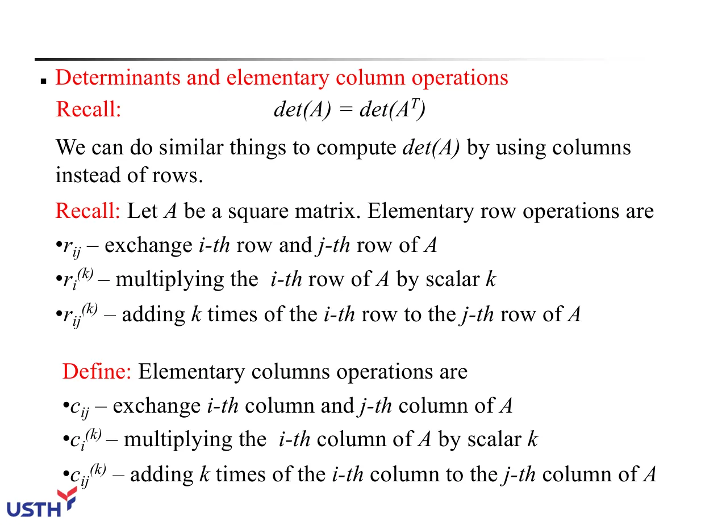
Since $\det A=\det A^T$, everything said about rows holds for columns. Define the elementary column operations: $c_{ij}$ (swap columns $i$ and $j$), $c_i^{(k)}$ (multiply column $i$ by $k$), $c_{ij}^{(k)}$ (add $k$ times column $i$ to column $j$). Rows and columns may be mixed freely when computing a determinant (but never when solving a linear system).
Vì $\det A=\det A^T$ nên mọi điều nói về hàng đều đúng cho cột. Định nghĩa các phép biến đổi sơ cấp theo cột: $c_{ij}$ (đổi chỗ cột $i$ và $j$), $c_i^{(k)}$ (nhân cột $i$ với $k$), $c_{ij}^{(k)}$ (cộng $k$ lần cột $i$ vào cột $j$). Hàng và cột có thể dùng lẫn lộn tự do khi tính định thức (nhưng không bao giờ khi giải hệ phương trình tuyến tính).
For $A=\begin{bmatrix}1&2&3\\4&5&6\\7&8&10\end{bmatrix}$ check $\det A=\det A^T$ and that swapping columns 1 and 2 changes the sign.
Với $A=\begin{bmatrix}1&2&3\\4&5&6\\7&8&10\end{bmatrix}$ kiểm tra $\det A=\det A^T$ và đổi chỗ cột 1 và 2 làm đổi dấu.
Answer and solution · Đáp án và lời giải
Answer · Đáp án: $\det A=\det A^T=-3$; after the swap $\det=3$
$A^T$ has the same determinant, $-3$. Swapping columns 1 and 2 gives $\begin{bmatrix}2&1&3\\5&4&6\\8&7&10\end{bmatrix}$ with determinant $+3$ (a column swap multiplies by $-1$).
$A^T$ có cùng định thức, $-3$. Đổi chỗ cột 1 và 2 được $\begin{bmatrix}2&1&3\\5&4&6\\8&7&10\end{bmatrix}$ với định thức $+3$ (đổi chỗ cột nhân với $-1$).
Theorem: column operations and determinants · Định lý: phép biến đổi cột và định thức
★★★ Core · Cốt lõi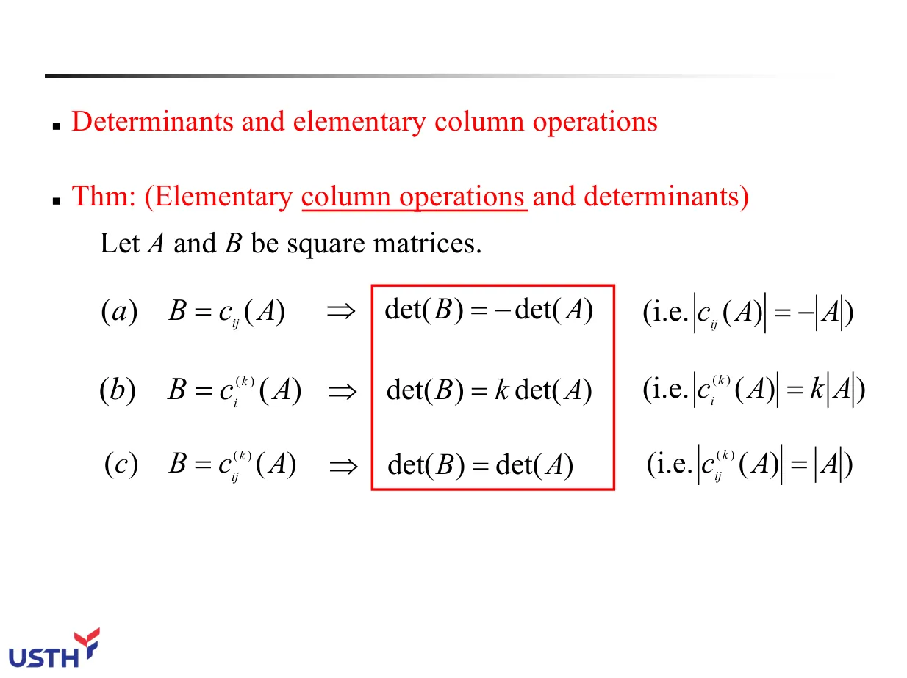
For square matrices $A,B$: (a) $B=c_{ij}(A)\Rightarrow\det B=-\det A$; (b) $B=c_i^{(k)}(A)\Rightarrow\det B=k\det A$; (c) $B=c_{ij}^{(k)}(A)\Rightarrow\det B=\det A$. The same three rules as for rows. Very useful to create zeros in a row and then expand along it.
Với ma trận vuông $A,B$: (a) $B=c_{ij}(A)\Rightarrow\det B=-\det A$; (b) $B=c_i^{(k)}(A)\Rightarrow\det B=k\det A$; (c) $B=c_{ij}^{(k)}(A)\Rightarrow\det B=\det A$. Ba quy tắc giống như với hàng. Rất hữu ích để tạo các số không trong một hàng rồi khai triển theo hàng đó.
Use $c_{21}^{(-2)}$ (add $-2$ times column 2... i.e. $C_1-2C_2$) to simplify $\begin{vmatrix}2&1&-3\\4&0&1\\0&0&2\end{vmatrix}$ and evaluate.
Dùng phép cột để đơn giản hóa $\begin{vmatrix}2&1&-3\\4&0&1\\0&0&2\end{vmatrix}$ và tính giá trị.
Answer and solution · Đáp án và lời giải
Answer · Đáp án: $-8$
Row 3 is $(0,0,2)$, so expand along it: $2\cdot C_{33}=2\begin{vmatrix}2&1\\4&0\end{vmatrix}=2(0-4)=-8$. No column operation is even needed here; column operations are for creating such rows of zeros.
Hàng 3 là $(0,0,2)$ nên khai triển theo hàng đó: $2\cdot C_{33}=2\begin{vmatrix}2&1\\4&0\end{vmatrix}=2(0-4)=-8$. Ở đây thậm chí không cần phép cột; phép cột dùng để tạo ra các hàng toàn số không như vậy.
Example: column operations on a matrix · Ví dụ: phép biến đổi cột trên một ma trận
★★★ Core · Cốt lõi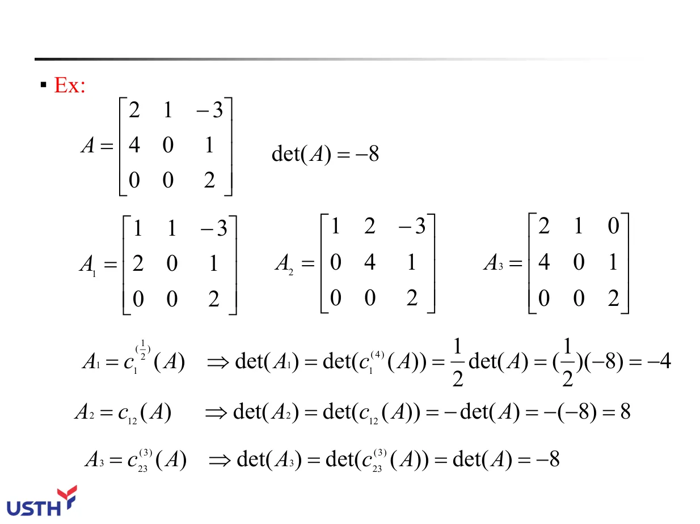
$A=\begin{bmatrix}2&1&-3\\4&0&1\\0&0&2\end{bmatrix}$ has $\det A=-8$. $A_1=c_1^{(1/2)}(A)$ (column 1 times $\frac12$) has $\det A_1=\frac12(-8)=-4$. $A_2=c_{12}(A)$ (swap columns 1,2) has $\det A_2=8$. $A_3=c_{23}^{(3)}(A)$ (add $3\times$ column 2 to column 3) has $\det A_3=-8$ (unchanged).
$A=\begin{bmatrix}2&1&-3\\4&0&1\\0&0&2\end{bmatrix}$ có $\det A=-8$. $A_1=c_1^{(1/2)}(A)$ (cột 1 nhân $\frac12$) có $\det A_1=\frac12(-8)=-4$. $A_2=c_{12}(A)$ (đổi chỗ cột 1,2) có $\det A_2=8$. $A_3=c_{23}^{(3)}(A)$ (cộng $3\times$ cột 2 vào cột 3) có $\det A_3=-8$ (không đổi).
Verify the four determinants of the slide.
Kiểm tra bốn định thức của slide.
Answer and solution · Đáp án và lời giải
Answer · Đáp án: $-8,\ -4,\ 8,\ -8$
$A_1=\begin{bmatrix}1&1&-3\\2&0&1\\0&0&2\end{bmatrix}$: $2(0-2)=-4$. $A_2=\begin{bmatrix}1&2&-3\\0&4&1\\0&0&2\end{bmatrix}$ is upper triangular: $1\cdot4\cdot2=8$. $A_3=\begin{bmatrix}2&1&0\\4&0&1\\0&0&2\end{bmatrix}$: $2(0-4)=-8$.
$A_1=\begin{bmatrix}1&1&-3\\2&0&1\\0&0&2\end{bmatrix}$: $2(0-2)=-4$. $A_2=\begin{bmatrix}1&2&-3\\0&4&1\\0&0&2\end{bmatrix}$ là tam giác trên: $1\cdot4\cdot2=8$. $A_3=\begin{bmatrix}2&1&0\\4&0&1\\0&0&2\end{bmatrix}$: $2(0-4)=-8$.
Theorem 3.4: conditions that give a zero determinant · Định lý 3.4: các điều kiện cho định thức bằng không
★★★ Core · Cốt lõi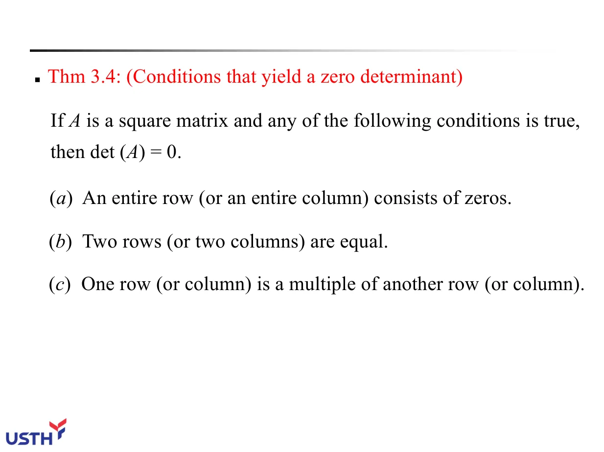
Theorem 3.4. If $A$ is square and any of these holds, then $\det A=0$: (a) an entire row (or column) consists of zeros; (b) two rows (or two columns) are equal; (c) one row (or column) is a multiple of another row (or column). These are quick checks to run before computing anything: they detect singular matrices instantly.
Định lý 3.4. Nếu $A$ vuông và bất kỳ điều nào sau đây đúng thì $\det A=0$: (a) cả một hàng (hoặc cột) toàn số không; (b) hai hàng (hoặc hai cột) bằng nhau; (c) một hàng (hoặc cột) là bội của một hàng (hoặc cột) khác. Đây là các kiểm tra nhanh nên chạy trước khi tính gì: chúng phát hiện ma trận suy biến ngay lập tức.
For which $k$ is $\det\begin{bmatrix}1&2&3\\2&4&k\\1&0&1\end{bmatrix}=0$?
Với giá trị $k$ nào thì $\det\begin{bmatrix}1&2&3\\2&4&k\\1&0&1\end{bmatrix}=0$?
Answer and solution · Đáp án và lời giải
Answer · Đáp án: $k=6$
Expanding: $\det=2k-12$, zero iff $k=6$; at $k=6$ the second row $(2,4,6)$ is twice the first row $(1,2,3)$: case (c) of the theorem.
Khai triển: $\det=2k-12$, bằng không khi và chỉ khi $k=6$; với $k=6$ hàng hai $(2,4,6)$ gấp đôi hàng một $(1,2,3)$: trường hợp (c) của định lý.
Examples of zero determinants · Ví dụ về định thức bằng không
★★ Important · Quan trọng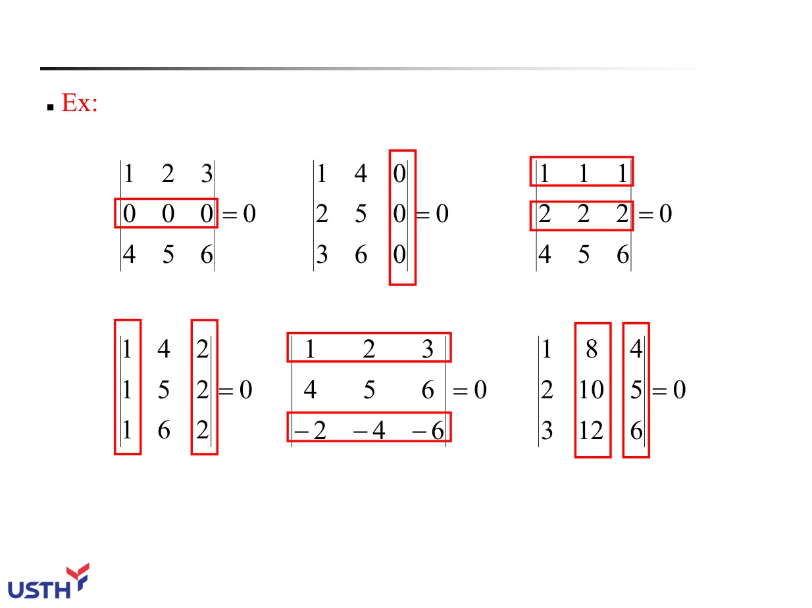
The slide shows six determinants equal to $0$ for the three reasons of the theorem: a zero row, a zero column, two equal rows ($\begin{vmatrix}1&1&1\\2&2&2\\4&5&6\end{vmatrix}$ has proportional rows), two equal or proportional columns, a row that is $-2$ times another. The two-column cases (e.g. columns $(1,1,1)^T$ and $(2,2,2)^T$) work the same way as rows because $\det A=\det A^T$.
Slide cho sáu định thức bằng $0$ vì ba lý do của định lý: hàng không, cột không, hai hàng bằng nhau ($\begin{vmatrix}1&1&1\\2&2&2\\4&5&6\end{vmatrix}$ có các hàng tỉ lệ), hai cột bằng nhau hoặc tỉ lệ, một hàng bằng $-2$ lần hàng khác. Các trường hợp hai cột (ví dụ cột $(1,1,1)^T$ và $(2,2,2)^T$) hoạt động như với hàng vì $\det A=\det A^T$.
Why is $\begin{vmatrix}1&4&2\\1&5&2\\1&6&2\end{vmatrix}=0$?
Vì sao $\begin{vmatrix}1&4&2\\1&5&2\\1&6&2\end{vmatrix}=0$?
Answer and solution · Đáp án và lời giải
Answer · Đáp án: column 3 is twice column 1
Column 3 is $(2,2,2)^T=2(1,1,1)^T=2\times$ column 1: a column that is a multiple of another gives $\det=0$.
Cột 3 là $(2,2,2)^T=2(1,1,1)^T=2\times$ cột 1: một cột là bội của cột khác cho $\det=0$.
Cofactor expansion versus row reduction: cost · Khai triển phần bù đại số so với khử hàng: chi phí
★★ Important · Quan trọng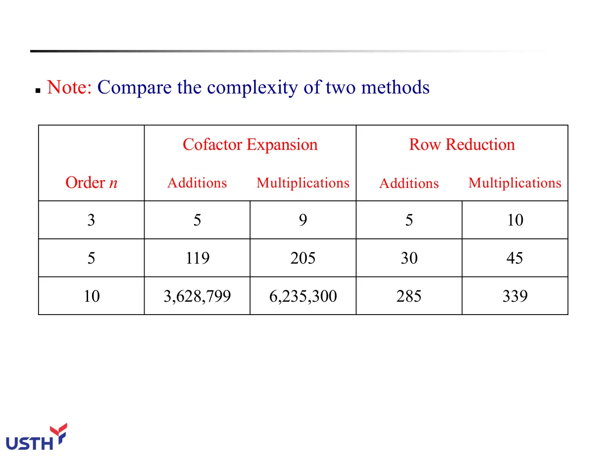
The table counts operations. For order $n=3$: cofactor expansion needs $5$ additions and $9$ multiplications, row reduction $5$ and $10$; for $n=5$: $119$ and $205$ against $30$ and $45$; for $n=10$: $3{,}628{,}799$ additions and $6{,}235{,}300$ multiplications against only $285$ and $339$. Cofactor expansion costs about $n!$ operations, row reduction about $n^3$. So row reduction wins for anything but tiny matrices.
Bảng đếm số phép tính. Với cấp $n=3$: khai triển phần bù đại số cần $5$ phép cộng và $9$ phép nhân, khử hàng cần $5$ và $10$; với $n=5$: $119$ và $205$ so với $30$ và $45$; với $n=10$: $3{,}628{,}799$ phép cộng và $6{,}235{,}300$ phép nhân so với chỉ $285$ và $339$. Khai triển phần bù đại số tốn cỡ $n!$ phép tính, khử hàng cỡ $n^3$. Vậy khử hàng thắng ở mọi ma trận trừ loại rất nhỏ.
Show that the numbers of additions in the cofactor column of the table are $n!-1$ for $n=3,5,10$.
Chứng tỏ số phép cộng ở cột khai triển phần bù đại số của bảng là $n!-1$ với $n=3,5,10$.
Answer and solution · Đáp án và lời giải
Answer · Đáp án: $5,\ 119,\ 3{,}628{,}799$
$3!-1=5$, $5!-1=119$, $10!-1=3{,}628{,}799$: expanding a determinant of order $n$ produces $n!$ terms, hence $n!-1$ additions. The factorial growth is why cofactor expansion is only used by hand on small matrices or matrices with many zeros.
$3!-1=5$, $5!-1=119$, $10!-1=3{,}628{,}799$: khai triển định thức cấp $n$ cho $n!$ số hạng, do đó $n!-1$ phép cộng. Sự tăng giai thừa là lý do khai triển phần bù đại số chỉ dùng bằng tay cho ma trận nhỏ hoặc ma trận có nhiều số không.
Combined methods: Example 5 · Phương pháp kết hợp: Ví dụ 5
★★★ Core · Cốt lõi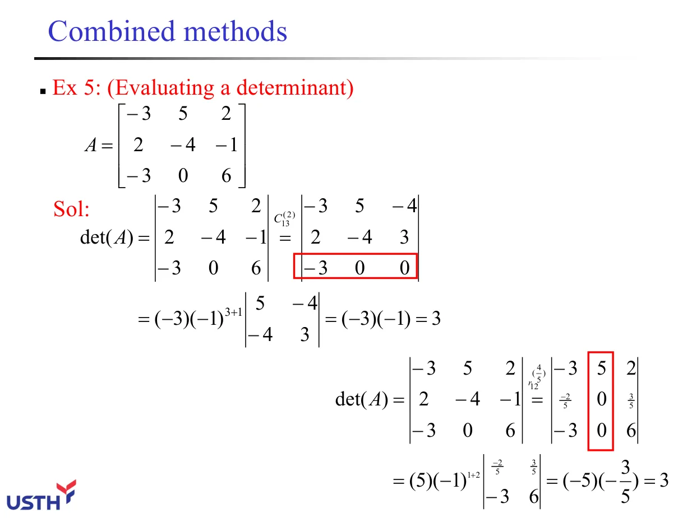
Combine row/column operations with cofactor expansion: first create zeros, then expand along the row or column that has them. For $A=\begin{bmatrix}-3&5&2\\2&-4&-1\\-3&0&6\end{bmatrix}$ do $c_{13}^{(2)}$ ($C_3+2C_1$) to get the third row $(-3,0,0)$, then expand along that row: $\det A=(-3)(-1)^{3+1}\begin{vmatrix}5&-4\\-4&3\end{vmatrix}=(-3)(-1)=3$. Alternatively use $r_{12}^{(4/5)}$ to create zeros in column 2: same answer $3$.
Kết hợp phép biến đổi hàng/cột với khai triển phần bù đại số: trước hết tạo các số không, rồi khai triển theo hàng hoặc cột chứa chúng. Với $A=\begin{bmatrix}-3&5&2\\2&-4&-1\\-3&0&6\end{bmatrix}$ làm $c_{13}^{(2)}$ ($C_3+2C_1$) để hàng ba thành $(-3,0,0)$, rồi khai triển theo hàng đó: $\det A=(-3)(-1)^{3+1}\begin{vmatrix}5&-4\\-4&3\end{vmatrix}=(-3)(-1)=3$. Hoặc dùng $r_{12}^{(4/5)}$ để tạo số không ở cột 2: cùng đáp số $3$.
Verify $\det A=3$ and the $2\times2$ minor $\begin{vmatrix}5&-4\\-4&3\end{vmatrix}=-1$.
Kiểm tra $\det A=3$ và định thức con $2\times2$ $\begin{vmatrix}5&-4\\-4&3\end{vmatrix}=-1$.
Answer and solution · Đáp án và lời giải
Answer · Đáp án: $\det A=3$, minor $=-1$
$\begin{vmatrix}5&-4\\-4&3\end{vmatrix}=15-16=-1$, and $\det A=(-3)(+1)(-1)=3$ (the position $(3,1)$ has sign $(-1)^4=+$).
$\begin{vmatrix}5&-4\\-4&3\end{vmatrix}=15-16=-1$, và $\det A=(-3)(+1)(-1)=3$ (vị trí $(3,1)$ có dấu $(-1)^4=+$).
Combined methods: Example 6, a $5\times5$ determinant (start) · Phương pháp kết hợp: Ví dụ 6, định thức $5\times5$ (bắt đầu)
★★★ Core · Cốt lõi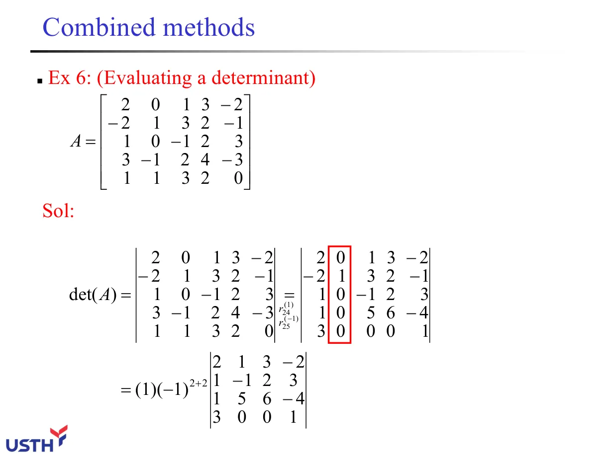
$A=\begin{bmatrix}2&0&1&3&-2\\-2&1&3&2&-1\\1&0&-1&2&3\\3&-1&2&4&-3\\1&1&3&2&0\end{bmatrix}$. Column 2 already has two zeros; the operations $r_{24}^{(1)}$ and $r_{25}^{(-1)}$ (add row 2 to row 4, subtract row 2 from row 5) turn column 2 into $(0,1,0,0,0)^T$. Expanding along column 2 leaves $(1)(-1)^{2+2}$ times a $4\times4$ determinant.
$A=\begin{bmatrix}2&0&1&3&-2\\-2&1&3&2&-1\\1&0&-1&2&3\\3&-1&2&4&-3\\1&1&3&2&0\end{bmatrix}$. Cột 2 đã có hai số không; các phép $r_{24}^{(1)}$ và $r_{25}^{(-1)}$ (cộng hàng 2 vào hàng 4, trừ hàng 2 khỏi hàng 5) biến cột 2 thành $(0,1,0,0,0)^T$. Khai triển theo cột 2 còn lại $(1)(-1)^{2+2}$ nhân một định thức $4\times4$.
Check that the $5\times5$ determinant of the slide equals $-135$.
Kiểm tra định thức $5\times5$ của slide bằng $-135$.
Answer and solution · Đáp án và lời giải
Answer · Đáp án: $-135$
Both the direct computation and the reduction on the slide give $-135$; the operations $r_{24}^{(1)}$ and $r_{25}^{(-1)}$ do not change the determinant (type (c)), so only the expansion factors matter.
Cả phép tính trực tiếp và phép rút gọn trên slide đều cho $-135$; các phép $r_{24}^{(1)}$ và $r_{25}^{(-1)}$ không đổi định thức (loại (c)) nên chỉ các hệ số khai triển có vai trò.
Example 6: finishing · Ví dụ 6: hoàn tất
★★★ Core · Cốt lõi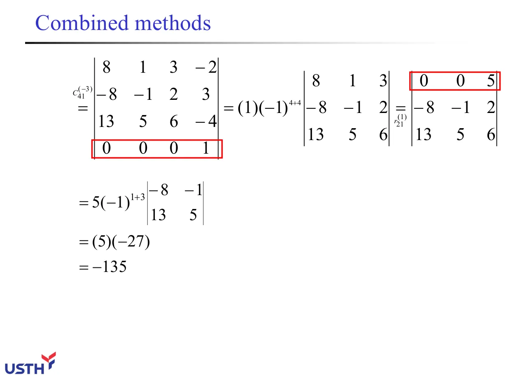
The $4\times4$ determinant is $\begin{vmatrix}2&1&3&-2\\1&-1&2&3\\1&5&6&-4\\3&0&0&1\end{vmatrix}$ (after the column-2 expansion). The operation $c_{41}^{(-3)}$ ($C_1-3C_4$) makes the last row $(0,0,0,1)$ and expansion along it leaves a $3\times3$ determinant; one more operation $r_{21}^{(1)}$ puts $(0,0,5)$ in the first row, and the final $2\times2$ determinant is $\begin{vmatrix}-8&-1\\13&5\end{vmatrix}=-27$. So $\det A=5\cdot(-27)=-135$.
Định thức $4\times4$ là $\begin{vmatrix}2&1&3&-2\\1&-1&2&3\\1&5&6&-4\\3&0&0&1\end{vmatrix}$ (sau khi khai triển theo cột 2). Phép $c_{41}^{(-3)}$ ($C_1-3C_4$) làm hàng cuối thành $(0,0,0,1)$ và khai triển theo hàng đó còn một định thức $3\times3$; thêm phép $r_{21}^{(1)}$ đặt $(0,0,5)$ vào hàng đầu, và định thức $2\times2$ cuối là $\begin{vmatrix}-8&-1\\13&5\end{vmatrix}=-27$. Vậy $\det A=5\cdot(-27)=-135$.
Evaluate $\det\begin{bmatrix}1&2&0&3\\0&1&4&1\\2&0&1&0\\1&1&0&2\end{bmatrix}$ by creating zeros and expanding.
Tính $\det\begin{bmatrix}1&2&0&3\\0&1&4&1\\2&0&1&0\\1&1&0&2\end{bmatrix}$ bằng cách tạo số không và khai triển.
Answer and solution · Đáp án và lời giải
Answer · Đáp án: $8$
Column 3 is $(0,4,1,0)^T$. Use $R_2-4R_3$ to get $(-8,1,0,1)$ so column 3 becomes $(0,0,1,0)^T$, then expand along column 3: $1\cdot(-1)^{3+3}\begin{vmatrix}1&2&3\\-8&1&1\\1&1&2\end{vmatrix}=1(2-1)-2(-16-1)+3(-8-1)=1+34-27=8$.
Cột 3 là $(0,4,1,0)^T$. Dùng $R_2-4R_3$ được $(-8,1,0,1)$ nên cột 3 thành $(0,0,1,0)^T$, rồi khai triển theo cột 3: $1\cdot(-1)^{3+3}\begin{vmatrix}1&2&3\\-8&1&1\\1&1&2\end{vmatrix}=1(2-1)-2(-16-1)+3(-8-1)=1+34-27=8$.
3.3 Theorem 3.5: the determinant of a product · 3.3 Định lý 3.5: định thức của tích
★★★ Core · Cốt lõi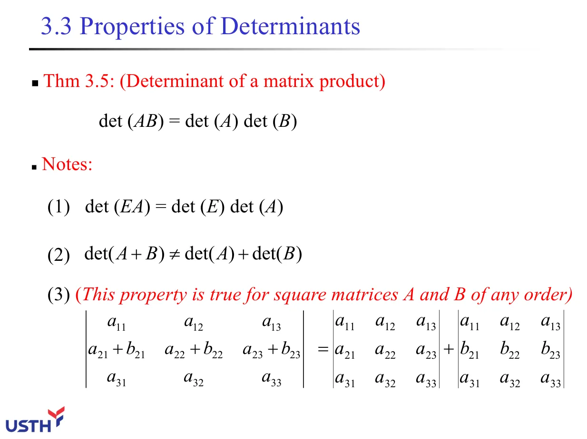
Theorem 3.5. $\det(AB)=\det(A)\det(B)$ for square matrices of the same order. Notes: (1) in particular $\det(EA)=\det E\det A$; (2) $\det(A+B)\ne\det A+\det B$ in general (the determinant is multiplicative, not additive); (3) but it is additive in a single row (or column): if two matrices differ only in row 2, the determinant of the matrix whose row 2 is the sum is the sum of the two determinants.
Định lý 3.5. $\det(AB)=\det(A)\det(B)$ với các ma trận vuông cùng cấp. Lưu ý: (1) đặc biệt $\det(EA)=\det E\det A$; (2) $\det(A+B)\ne\det A+\det B$ nói chung (định thức có tính nhân, không có tính cộng); (3) nhưng nó có tính cộng theo một hàng (hoặc cột): nếu hai ma trận chỉ khác nhau ở hàng 2 thì định thức của ma trận có hàng 2 là tổng bằng tổng hai định thức.
$\det(A+B)\ne\det A+\det B$ is the most frequent determinant error in exams; always compute $A+B$ first, then its determinant.
$\det(A+B)\ne\det A+\det B$ là lỗi định thức thường gặp nhất trong đề thi; luôn tính $A+B$ trước rồi mới tính định thức.
Show that $\det(A+B)\ne\det A+\det B$ for $A=B=I_2$.
Chứng tỏ $\det(A+B)\ne\det A+\det B$ với $A=B=I_2$.
Answer and solution · Đáp án và lời giải
Answer · Đáp án: $\det(2I_2)=4$ but $\det I+\det I=2$
$A+B=2I_2$ has determinant $2\cdot2=4$, whereas $\det A+\det B=1+1=2$. (Compare $\det(AB)=\det(I_2)=1=1\cdot1$.)
$A+B=2I_2$ có định thức $2\cdot2=4$, trong khi $\det A+\det B=1+1=2$. (So với $\det(AB)=\det(I_2)=1=1\cdot1$.)
Additivity in one column · Tính cộng theo một cột
★★ Important · Quan trọng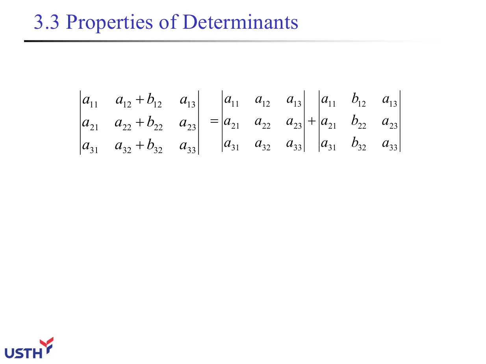
The slide shows the same additivity property for columns: if column 2 of a matrix is the sum $a_{i2}+b_{i2}$, its determinant splits as the sum of two determinants, one with column $a_{\cdot2}$ and one with column $b_{\cdot2}$, all other columns unchanged. Together with the factor rule ($\det$ is multiplied by $k$ when a row is) this says: the determinant is linear in each row (and column) separately.
Slide cho cùng tính chất cộng theo cột: nếu cột 2 của ma trận là tổng $a_{i2}+b_{i2}$ thì định thức của nó tách thành tổng hai định thức, một với cột $a_{\cdot2}$ và một với cột $b_{\cdot2}$, các cột khác giữ nguyên. Cùng với quy tắc nhân hệ số ($\det$ nhân với $k$ khi một hàng được nhân) điều này nói: định thức tuyến tính theo từng hàng (và cột) riêng rẽ.
Split $\begin{vmatrix}a+1&b+2\\c&d\end{vmatrix}$ along the first row as a sum of two determinants.
Tách $\begin{vmatrix}a+1&b+2\\c&d\end{vmatrix}$ theo hàng một thành tổng hai định thức.
Answer and solution · Đáp án và lời giải
Answer · Đáp án: $\begin{vmatrix}a&b\\c&d\end{vmatrix}+\begin{vmatrix}1&2\\c&d\end{vmatrix}$
The first row is the sum $(a,b)+(1,2)$ and the second row is unchanged: $(a+1)d-(b+2)c=(ad-bc)+(d-2c)$, which is $\begin{vmatrix}a&b\\c&d\end{vmatrix}+\begin{vmatrix}1&2\\c&d\end{vmatrix}$.
Hàng một là tổng $(a,b)+(1,2)$ và hàng hai không đổi: $(a+1)d-(b+2)c=(ad-bc)+(d-2c)$, chính là $\begin{vmatrix}a&b\\c&d\end{vmatrix}+\begin{vmatrix}1&2\\c&d\end{vmatrix}$.
Example 1: verifying $\det(AB)=\det A\det B$, part 1 · Ví dụ 1: kiểm tra $\det(AB)=\det A\det B$, phần 1
★★★ Core · Cốt lõi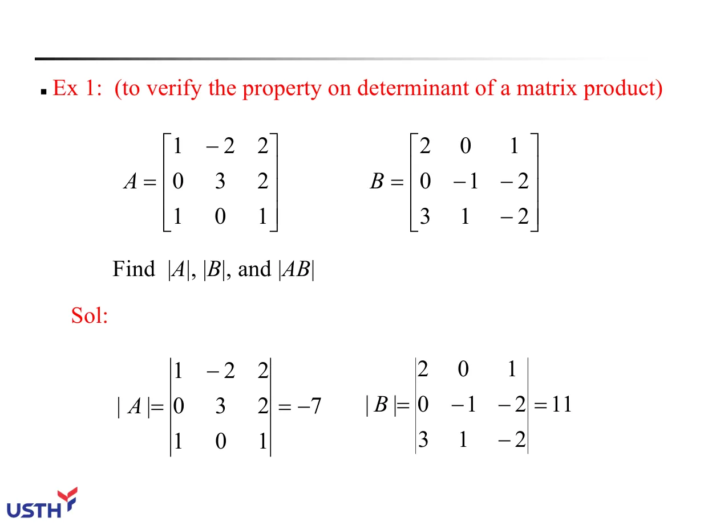
$A=\begin{bmatrix}1&-2&2\\0&3&2\\1&0&1\end{bmatrix}$ and $B=\begin{bmatrix}2&0&1\\0&-1&-2\\3&1&-2\end{bmatrix}$. Find $|A|$, $|B|$ and $|AB|$. Expanding along row 1: $|A|=1(3-0)+2(0-2)+2(0-3)=3-4-6=-7$ and $|B|=2(2+2)-0+1(0+3)=11$.
$A=\begin{bmatrix}1&-2&2\\0&3&2\\1&0&1\end{bmatrix}$ và $B=\begin{bmatrix}2&0&1\\0&-1&-2\\3&1&-2\end{bmatrix}$. Tìm $|A|$, $|B|$ và $|AB|$. Khai triển theo hàng 1: $|A|=1(3-0)+2(0-2)+2(0-3)=3-4-6=-7$ và $|B|=2(2+2)-0+1(0+3)=11$.
Check $|A|=-7$ and $|B|=11$ for the slide's matrices.
Kiểm tra $|A|=-7$ và $|B|=11$ cho các ma trận của slide.
Answer and solution · Đáp án và lời giải
Answer · Đáp án: $-7$ and $11$
Cofactor expansions along row 1 as above. Both are nonzero, so $A$ and $B$ are invertible, and by Theorem 3.5 so is $AB$.
Khai triển phần bù đại số theo hàng 1 như trên. Cả hai khác không nên $A$ và $B$ khả nghịch, và theo Định lý 3.5 $AB$ cũng khả nghịch.
Example 1: part 2, $|AB|=-77$ · Ví dụ 1: phần 2, $|AB|=-77$
★★★ Core · Cốt lõi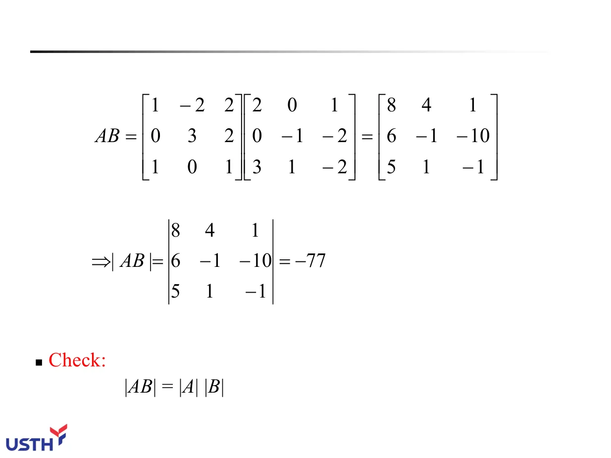
$AB=\begin{bmatrix}8&4&1\\6&-1&-10\\5&1&-1\end{bmatrix}$ and $|AB|=-77$. Check: $|A||B|=(-7)(11)=-77=|AB|$ ✓. The product rule saves effort: you can find $\det(AB)$ without multiplying the two matrices.
$AB=\begin{bmatrix}8&4&1\\6&-1&-10\\5&1&-1\end{bmatrix}$ và $|AB|=-77$. Kiểm tra: $|A||B|=(-7)(11)=-77=|AB|$ ✓. Quy tắc tích tiết kiệm công sức: có thể tìm $\det(AB)$ mà không cần nhân hai ma trận.
Verify the product $AB$ of the slide and $|AB|=|A||B|$.
Kiểm tra tích $AB$ của slide và $|AB|=|A||B|$.
Answer and solution · Đáp án và lời giải
Answer · Đáp án: $|AB|=-77=(-7)(11)$
$AB$ entry $(1,1)=1\cdot2+(-2)\cdot0+2\cdot3=8$ and so on give the matrix above, whose determinant is $-77$. This equals $(-7)(11)$.
Phần tử $(1,1)$ của $AB$ là $1\cdot2+(-2)\cdot0+2\cdot3=8$ và cứ thế cho ma trận trên, có định thức $-77$. Bằng $(-7)(11)$.
Theorem 3.6: $\det(cA)=c^n\det A$ · Định lý 3.6: $\det(cA)=c^n\det A$
★★★ Core · Cốt lõi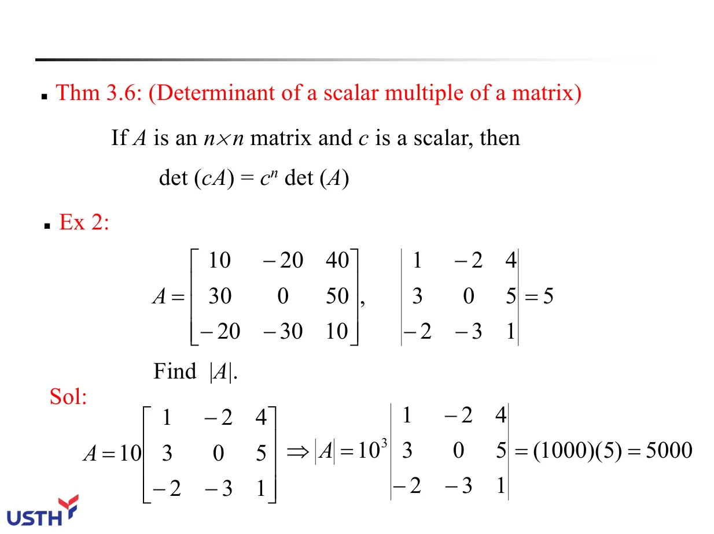
Theorem 3.6. If $A$ is $n\times n$ and $c$ is a scalar then $\det(cA)=c^n\det(A)$: multiplying the whole matrix by $c$ multiplies each of its $n$ rows by $c$, giving $c$ $n$ times. Example 2: $A=10\begin{bmatrix}1&-2&4\\3&0&5\\-2&-3&1\end{bmatrix}$ with the inner determinant $5$, so $|A|=10^3\cdot5=5000$. Mistake to avoid: $\det(cA)\ne c\det A$.
Định lý 3.6. Nếu $A$ cỡ $n\times n$ và $c$ là vô hướng thì $\det(cA)=c^n\det(A)$: nhân cả ma trận với $c$ là nhân mỗi trong $n$ hàng với $c$, tức nhân $c$ $n$ lần. Ví dụ 2: $A=10\begin{bmatrix}1&-2&4\\3&0&5\\-2&-3&1\end{bmatrix}$ với định thức bên trong bằng $5$, nên $|A|=10^3\cdot5=5000$. Lỗi cần tránh: $\det(cA)\ne c\det A$.
A $4\times4$ matrix $A$ has $\det A=3$. Find $\det(2A)$ and $\det(-A)$.
Ma trận $4\times4$ $A$ có $\det A=3$. Tìm $\det(2A)$ và $\det(-A)$.
Answer and solution · Đáp án và lời giải
Answer · Đáp án: $48$ and $3$
$\det(2A)=2^4\cdot3=48$; $\det(-A)=(-1)^4\cdot3=3$ (an even order makes $-A$ keep the determinant; for odd $n$ it would change sign).
$\det(2A)=2^4\cdot3=48$; $\det(-A)=(-1)^4\cdot3=3$ (cấp chẵn làm $-A$ giữ nguyên định thức; với $n$ lẻ nó sẽ đổi dấu).
Theorem 3.7: invertible iff $\det\ne0$ · Định lý 3.7: khả nghịch khi và chỉ khi $\det\ne0$
★★★ Core · Cốt lõi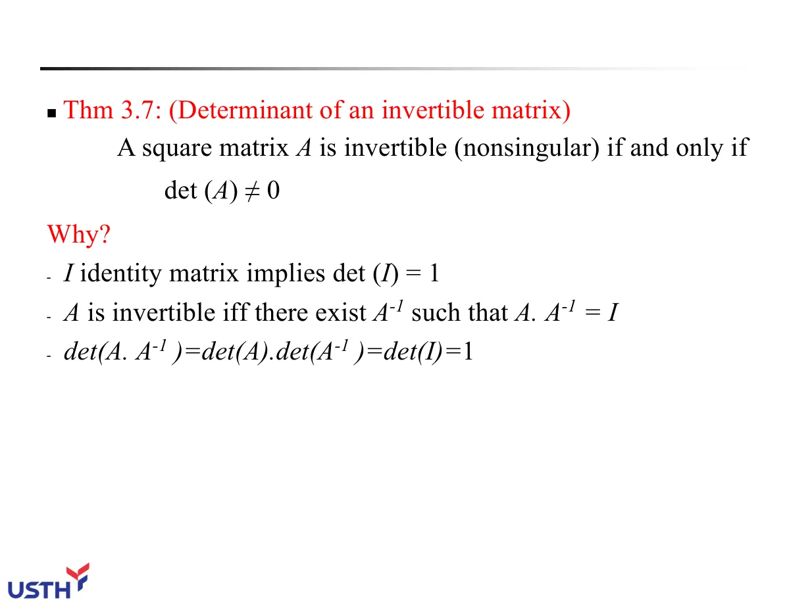
Theorem 3.7. A square matrix $A$ is invertible (nonsingular) if and only if $\det A\ne0$. Why? $\det I=1$. If $A$ is invertible, $AA^{-1}=I$, so $\det A\cdot\det(A^{-1})=\det I=1$; hence $\det A\ne0$. (The converse follows from the reduction to $I$: if $\det A\ne0$ the row reduction never produces a zero row, so $A\to I$.)
Định lý 3.7. Ma trận vuông $A$ khả nghịch (không suy biến) khi và chỉ khi $\det A\ne0$. Vì sao? $\det I=1$. Nếu $A$ khả nghịch, $AA^{-1}=I$ nên $\det A\cdot\det(A^{-1})=\det I=1$; do đó $\det A\ne0$. (Chiều ngược lại suy ra từ phép rút gọn về $I$: nếu $\det A\ne0$ thì phép khử hàng không bao giờ tạo hàng không, nên $A\to I$.)
For which $t$ is $\begin{bmatrix}1&t\\t&4\end{bmatrix}$ invertible?
Với $t$ nào thì $\begin{bmatrix}1&t\\t&4\end{bmatrix}$ khả nghịch?
Answer and solution · Đáp án và lời giải
Answer · Đáp án: all $t\ne\pm2$
$\det=4-t^2$, which is $0$ iff $t=\pm2$. For $t=\pm2$ the matrix $\begin{bmatrix}1&\pm2\\\pm2&4\end{bmatrix}$ has proportional rows (singular); for every other $t$ it is invertible.
$\det=4-t^2$, bằng $0$ khi và chỉ khi $t=\pm2$. Với $t=\pm2$ ma trận $\begin{bmatrix}1&\pm2\\\pm2&4\end{bmatrix}$ có các hàng tỉ lệ (suy biến); với mọi $t$ khác nó khả nghịch.
Example 3: singular or nonsingular? · Ví dụ 3: suy biến hay không suy biến?
★★★ Core · Cốt lõi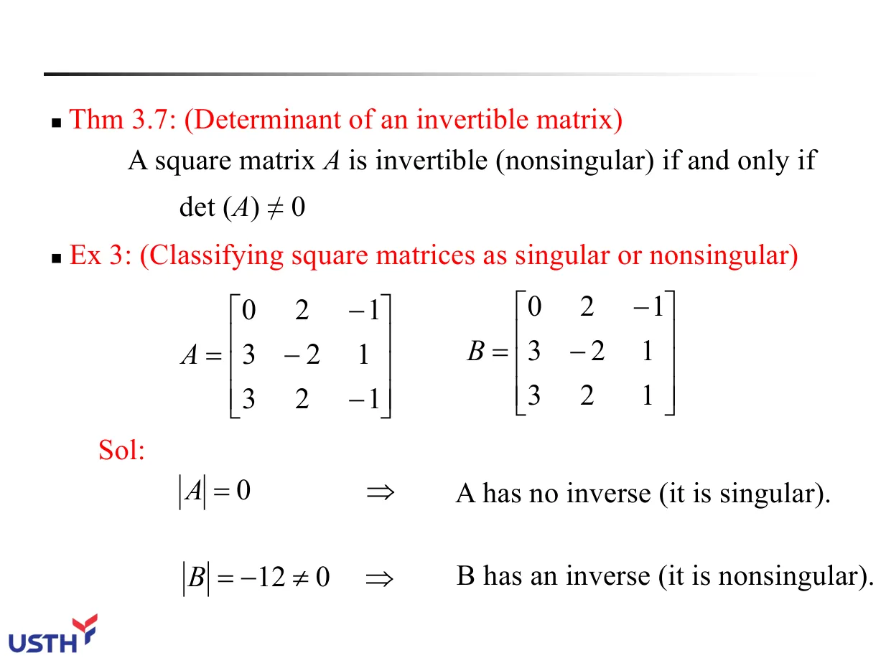
$A=\begin{bmatrix}0&2&-1\\3&-2&1\\3&2&-1\end{bmatrix}$ has $|A|=0$, so $A$ has no inverse (it is singular). $B=\begin{bmatrix}0&2&-1\\3&-2&1\\3&2&1\end{bmatrix}$ has $|B|=-12\ne0$, so $B$ has an inverse (it is nonsingular). The two matrices differ in a single entry ($-1$ versus $1$ at position $(3,3)$) yet behave completely differently.
$A=\begin{bmatrix}0&2&-1\\3&-2&1\\3&2&-1\end{bmatrix}$ có $|A|=0$ nên $A$ không có nghịch đảo (nó suy biến). $B=\begin{bmatrix}0&2&-1\\3&-2&1\\3&2&1\end{bmatrix}$ có $|B|=-12\ne0$ nên $B$ có nghịch đảo (nó không suy biến). Hai ma trận chỉ khác nhau một phần tử ($-1$ so với $1$ tại vị trí $(3,3)$) nhưng xử sự hoàn toàn khác nhau.
Verify $|A|=0$ and $|B|=-12$.
Kiểm tra $|A|=0$ và $|B|=-12$.
Answer and solution · Đáp án và lời giải
Answer · Đáp án: $0$ and $-12$
Expanding $|A|$ along row 1: $-2(3\cdot(-1)-1\cdot3)+(-1)(3\cdot2-(-2)\cdot3)=-2(-6)-12=0$. For $B$ the last entry is $1$: $-2(3-3)-(6+6)=-12$.
Khai triển $|A|$ theo hàng 1: $-2(3\cdot(-1)-1\cdot3)+(-1)(3\cdot2-(-2)\cdot3)=-2(-6)-12=0$. Với $B$ phần tử cuối là $1$: $-2(3-3)-(6+6)=-12$.
Theorems 3.8 and 3.9: inverse and transpose · Định lý 3.8 và 3.9: nghịch đảo và chuyển vị
★★★ Core · Cốt lõi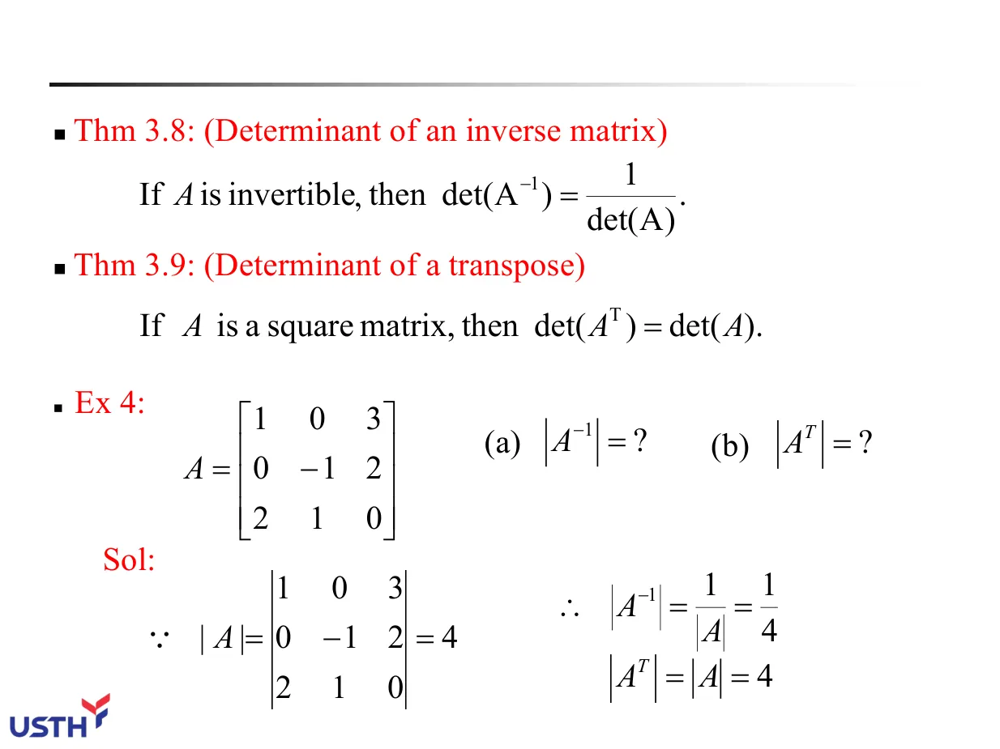
Theorem 3.8. If $A$ is invertible, $\det(A^{-1})=\frac1{\det A}$. Theorem 3.9. For any square matrix, $\det(A^T)=\det A$. Example 4: $A=\begin{bmatrix}1&0&3\\0&-1&2\\2&1&0\end{bmatrix}$ has $|A|=4$, so $|A^{-1}|=\frac14$ and $|A^T|=4$.
Định lý 3.8. Nếu $A$ khả nghịch thì $\det(A^{-1})=\frac1{\det A}$. Định lý 3.9. Với mọi ma trận vuông, $\det(A^T)=\det A$. Ví dụ 4: $A=\begin{bmatrix}1&0&3\\0&-1&2\\2&1&0\end{bmatrix}$ có $|A|=4$ nên $|A^{-1}|=\frac14$ và $|A^T|=4$.
If $A$ is $3\times3$ with $\det A=-2$ find $\det(A^{-1})$, $\det(A^T)$, $\det(A^2)$ and $\det(3A)$.
Nếu $A$ cỡ $3\times3$ với $\det A=-2$ tìm $\det(A^{-1})$, $\det(A^T)$, $\det(A^2)$ và $\det(3A)$.
Answer and solution · Đáp án và lời giải
Answer · Đáp án: $-\dfrac12,\ -2,\ 4,\ -54$
$\det(A^{-1})=\frac1{-2}=-\frac12$; $\det(A^T)=-2$; $\det(A^2)=(\det A)^2=4$; $\det(3A)=3^3\cdot(-2)=-54$.
$\det(A^{-1})=\frac1{-2}=-\frac12$; $\det(A^T)=-2$; $\det(A^2)=(\det A)^2=4$; $\det(3A)=3^3\cdot(-2)=-54$.
Equivalent conditions for a nonsingular matrix · Các điều kiện tương đương cho ma trận không suy biến
★★★ Core · Cốt lõi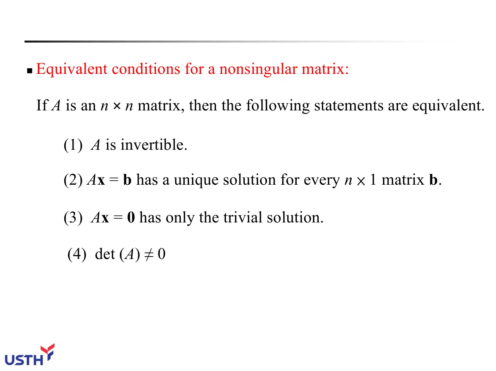
For an $n\times n$ matrix $A$ the following are equivalent: (1) $A$ is invertible; (2) $Ax=b$ has a unique solution for every $n\times1$ matrix $b$; (3) $Ax=0$ has only the trivial solution; (4) $\det A\ne0$. Lecture 2 gave (1)-(3); the determinant adds (4), a numerical test for the other three.
Với ma trận $A$ cỡ $n\times n$ các phát biểu sau tương đương: (1) $A$ khả nghịch; (2) $Ax=b$ có nghiệm duy nhất với mọi ma trận $b$ cỡ $n\times1$; (3) $Ax=0$ chỉ có nghiệm tầm thường; (4) $\det A\ne0$. Bài 2 đã cho (1)-(3); định thức bổ sung (4), một phép thử bằng số cho ba phát biểu còn lại.
This equivalence list grows through the course (rank, independence, spanning, eigenvalues); learn it now.
Danh sách tương đương này sẽ dài thêm suốt khóa học (hạng, độc lập, sinh, trị riêng); hãy học thuộc ngay bây giờ.
Without solving, decide the solutions of $Ax=0$ for $A=\begin{bmatrix}1&2&3\\0&1&4\\5&6&0\end{bmatrix}$ and then confirm by finding its null space.
Không giải, xác định nghiệm của $Ax=0$ với $A=\begin{bmatrix}1&2&3\\0&1&4\\5&6&0\end{bmatrix}$ rồi xác nhận bằng cách tìm không gian nghiệm.
Answer and solution · Đáp án và lời giải
Answer · Đáp án: $\det A=1\ne0$, so only the trivial solution
$\det A=1(0-24)-2(0-20)+3(0-5)=-24+40-15=1\ne0$, so $A$ is invertible and $Ax=0$ has only $x=0$; the null space is $\{0\}$.
$\det A=1(0-24)-2(0-20)+3(0-5)=-24+40-15=1\ne0$ nên $A$ khả nghịch và $Ax=0$ chỉ có $x=0$; không gian nghiệm là $\{0\}$.
Example 5: which system has a unique solution? · Ví dụ 5: hệ nào có nghiệm duy nhất?
★★★ Core · Cốt lõi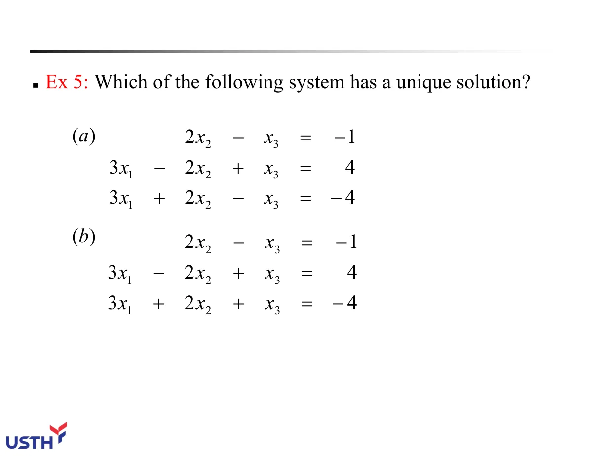
Which of these systems has a unique solution? (a) $2x_2-x_3=-1$, $3x_1-2x_2+x_3=4$, $3x_1+2x_2-x_3=-4$. (b) the same but with $+x_3$ in the last equation. Do not solve: look at the determinant of the coefficient matrix of each system.
Hệ nào trong các hệ sau có nghiệm duy nhất? (a) $2x_2-x_3=-1$, $3x_1-2x_2+x_3=4$, $3x_1+2x_2-x_3=-4$. (b) tương tự nhưng có $+x_3$ ở phương trình cuối. Đừng giải: hãy xem định thức của ma trận hệ số của mỗi hệ.
Decide for (a) and (b) the number of solutions and, for (b), find the solution.
Xác định số nghiệm của (a) và (b) và, với (b), tìm nghiệm.
Answer and solution · Đáp án và lời giải
Answer · Đáp án: (a) none; (b) unique: $(x_1,x_2,x_3)=(1,-2,-3)$
(a) $\det=0$, so there is not a unique solution; comparing ranks ($2$ for the coefficient matrix, $3$ for the augmented matrix) shows it is actually inconsistent: no solution. (b) $\det=-12\ne0$: unique solution, $A^{-1}b=(1,-2,-3)^T$. Check in equation 1: $2(-2)-(-3)=-1$ ✓.
(a) $\det=0$ nên không có nghiệm duy nhất; so sánh hạng ($2$ cho ma trận hệ số, $3$ cho ma trận mở rộng) cho thấy thực ra hệ vô nghiệm. (b) $\det=-12\ne0$: nghiệm duy nhất, $A^{-1}b=(1,-2,-3)^T$. Kiểm tra ở phương trình 1: $2(-2)-(-3)=-1$ ✓.
Example 5: the solution · Ví dụ 5: lời giải
★★★ Core · Cốt lõi(a) $Ax=b$ with $|A|=0$: this system does not have a unique solution. (b) $Bx=b$ with $|B|=-12\ne0$: this system has a unique solution. The determinant answers the question without any elimination. Be careful: $|A|=0$ means "not unique", which still leaves the choice between no solution and infinitely many.
(a) $Ax=b$ với $|A|=0$: hệ này không có nghiệm duy nhất. (b) $Bx=b$ với $|B|=-12\ne0$: hệ này có nghiệm duy nhất. Định thức trả lời câu hỏi mà không cần phép khử nào. Cẩn thận: $|A|=0$ nghĩa là "không duy nhất", vẫn còn lựa chọn giữa vô nghiệm và vô số nghiệm.
Does $\begin{bmatrix}1&2\\3&6\end{bmatrix}x=b$ always have a unique solution? And $\begin{bmatrix}1&2\\3&7\end{bmatrix}x=b$?
$\begin{bmatrix}1&2\\3&6\end{bmatrix}x=b$ có luôn có nghiệm duy nhất không? Còn $\begin{bmatrix}1&2\\3&7\end{bmatrix}x=b$?
Answer and solution · Đáp án và lời giải
Answer · Đáp án: no ($\det=0$); yes ($\det=1$)
$\det\begin{bmatrix}1&2\\3&6\end{bmatrix}=6-6=0$: for no $b$ is the solution unique (none or infinitely many). $\det\begin{bmatrix}1&2\\3&7\end{bmatrix}=7-6=1\ne0$: unique for every $b$.
$\det\begin{bmatrix}1&2\\3&6\end{bmatrix}=6-6=0$: với mọi $b$ nghiệm không duy nhất (vô nghiệm hoặc vô số). $\det\begin{bmatrix}1&2\\3&7\end{bmatrix}=7-6=1\ne0$: duy nhất với mọi $b$.
3.4 The eigenvalue problem · 3.4 Bài toán trị riêng
★★★ Core · Cốt lõiEigenvalue problem: for an $n\times n$ matrix $A$, are there nonzero $n\times1$ vectors $x$ such that $Ax$ is a scalar multiple of $x$? Definition: $A$ an $n\times n$ matrix, $\lambda$ a scalar, $x$ a nonzero column; $Ax=\lambda x$ is the fundamental equation: $\lambda$ is an eigenvalue of $A$ and $x$ is a corresponding eigenvector. Geometrically $A$ only stretches or flips $x$ along its own line. The zero vector is excluded (it would satisfy the equation for every $\lambda$).
Bài toán trị riêng: với ma trận $A$ cỡ $n\times n$, có tồn tại vectơ $x$ cỡ $n\times1$ khác không sao cho $Ax$ là bội vô hướng của $x$ không? Định nghĩa: $A$ cỡ $n\times n$, $\lambda$ vô hướng, $x$ cột khác không; $Ax=\lambda x$ là phương trình cơ bản: $\lambda$ là trị riêng của $A$ và $x$ là vectơ riêng tương ứng. Về hình học $A$ chỉ kéo giãn hoặc lật $x$ dọc theo chính đường thẳng của nó. Vectơ không bị loại trừ (nó thỏa phương trình với mọi $\lambda$).
Eigenvalues are the main reason for studying determinants in this course; they return in the last lecture (diagonalisation) and in every application.
Trị riêng là lý do chính để học định thức trong khóa này; chúng quay lại ở bài cuối (chéo hóa) và trong mọi ứng dụng.
Is $(1,2)^T$ an eigenvector of $\begin{bmatrix}2&0\\0&3\end{bmatrix}$? Is $(1,0)^T$?
$(1,2)^T$ có là vectơ riêng của $\begin{bmatrix}2&0\\0&3\end{bmatrix}$ không? $(1,0)^T$ thì sao?
Answer and solution · Đáp án và lời giải
Answer · Đáp án: no; yes with $\lambda=2$
$\begin{bmatrix}2&0\\0&3\end{bmatrix}\begin{bmatrix}1\\2\end{bmatrix}=\begin{bmatrix}2\\6\end{bmatrix}$ is not a multiple of $(1,2)$ (it would need $\lambda=2$ and $\lambda=3$). But $\begin{bmatrix}2&0\\0&3\end{bmatrix}\begin{bmatrix}1\\0\end{bmatrix}=2\begin{bmatrix}1\\0\end{bmatrix}$.
$\begin{bmatrix}2&0\\0&3\end{bmatrix}\begin{bmatrix}1\\2\end{bmatrix}=\begin{bmatrix}2\\6\end{bmatrix}$ không là bội của $(1,2)$ (cần $\lambda=2$ và $\lambda=3$ cùng lúc). Nhưng $\begin{bmatrix}2&0\\0&3\end{bmatrix}\begin{bmatrix}1\\0\end{bmatrix}=2\begin{bmatrix}1\\0\end{bmatrix}$.
Example 1: verifying eigenvalues and eigenvectors · Ví dụ 1: kiểm tra trị riêng và vectơ riêng
★★★ Core · Cốt lõi$A=\begin{bmatrix}1&4\\2&3\end{bmatrix}$, $x_1=\begin{bmatrix}1\\1\end{bmatrix}$, $x_2=\begin{bmatrix}2\\-1\end{bmatrix}$. $Ax_1=\begin{bmatrix}5\\5\end{bmatrix}=5x_1$: eigenvalue $5$, eigenvector $x_1$. $Ax_2=\begin{bmatrix}-2\\1\end{bmatrix}=-1\cdot x_2$: eigenvalue $-1$, eigenvector $x_2$. To verify, multiply and compare with a multiple of the vector.
$A=\begin{bmatrix}1&4\\2&3\end{bmatrix}$, $x_1=\begin{bmatrix}1\\1\end{bmatrix}$, $x_2=\begin{bmatrix}2\\-1\end{bmatrix}$. $Ax_1=\begin{bmatrix}5\\5\end{bmatrix}=5x_1$: trị riêng $5$, vectơ riêng $x_1$. $Ax_2=\begin{bmatrix}-2\\1\end{bmatrix}=-1\cdot x_2$: trị riêng $-1$, vectơ riêng $x_2$. Để kiểm tra, nhân rồi so với một bội của vectơ.
Verify that $(1,1)^T$ is an eigenvector of $\begin{bmatrix}2&1\\1&2\end{bmatrix}$ with $\lambda=3$ and $(1,-1)^T$ with $\lambda=1$.
Kiểm tra $(1,1)^T$ là vectơ riêng của $\begin{bmatrix}2&1\\1&2\end{bmatrix}$ với $\lambda=3$ và $(1,-1)^T$ với $\lambda=1$.
Answer and solution · Đáp án và lời giải
Answer · Đáp án: $A(1,1)^T=3(1,1)^T$ and $A(1,-1)^T=1\cdot(1,-1)^T$
$\begin{bmatrix}2&1\\1&2\end{bmatrix}\begin{bmatrix}1\\1\end{bmatrix}=\begin{bmatrix}3\\3\end{bmatrix}$ and $\begin{bmatrix}2&1\\1&2\end{bmatrix}\begin{bmatrix}1\\-1\end{bmatrix}=\begin{bmatrix}1\\-1\end{bmatrix}$.
$\begin{bmatrix}2&1\\1&2\end{bmatrix}\begin{bmatrix}1\\1\end{bmatrix}=\begin{bmatrix}3\\3\end{bmatrix}$ và $\begin{bmatrix}2&1\\1&2\end{bmatrix}\begin{bmatrix}1\\-1\end{bmatrix}=\begin{bmatrix}1\\-1\end{bmatrix}$.
How to find them: the characteristic equation · Cách tìm: phương trình đặc trưng
★★★ Core · Cốt lõiQuestion: given $A$, how do we find all eigenvalues and eigenvectors? Note: $Ax=\lambda x\iff(\lambda I-A)x=0$, a homogeneous system. It has a nonzero solution iff $\det(\lambda I-A)=0$ (Theorem 3.7 / the equivalences: nontrivial solution $\iff$ singular). The characteristic equation is $\det(\lambda I-A)=\lambda^n+c_{n-1}\lambda^{n-1}+\cdots+c_1\lambda+c_0=0$, a polynomial of degree $n$ in $\lambda$; its roots are the eigenvalues.
Câu hỏi: cho $A$, làm sao tìm mọi trị riêng và vectơ riêng? Lưu ý: $Ax=\lambda x\iff(\lambda I-A)x=0$, một hệ thuần nhất. Nó có nghiệm khác không khi và chỉ khi $\det(\lambda I-A)=0$ (Định lý 3.7 / các tương đương: nghiệm không tầm thường $\iff$ suy biến). Phương trình đặc trưng là $\det(\lambda I-A)=\lambda^n+c_{n-1}\lambda^{n-1}+\cdots+c_1\lambda+c_0=0$, đa thức bậc $n$ theo $\lambda$; các nghiệm của nó là các trị riêng.
Write the characteristic polynomial of $A=\begin{bmatrix}2&1\\1&2\end{bmatrix}$ and factor it.
Viết đa thức đặc trưng của $A=\begin{bmatrix}2&1\\1&2\end{bmatrix}$ và phân tích.
Answer and solution · Đáp án và lời giải
Answer · Đáp án: $\lambda^2-4\lambda+3=(\lambda-1)(\lambda-3)$
$\det(\lambda I-A)=\begin{vmatrix}\lambda-2&-1\\-1&\lambda-2\end{vmatrix}=(\lambda-2)^2-1=\lambda^2-4\lambda+3=(\lambda-1)(\lambda-3)$. Note the coefficient $-4$ is $-\operatorname{Tr}A$ and the constant $3$ is $\det A$.
$\det(\lambda I-A)=\begin{vmatrix}\lambda-2&-1\\-1&\lambda-2\end{vmatrix}=(\lambda-2)^2-1=\lambda^2-4\lambda+3=(\lambda-1)(\lambda-3)$. Chú ý hệ số $-4$ là $-\operatorname{Tr}A$ và hằng số $3$ là $\det A$.
Example 2: the eigenvalues of $\begin{bmatrix}1&4\\2&3\end{bmatrix}$ · Ví dụ 2: trị riêng của $\begin{bmatrix}1&4\\2&3\end{bmatrix}$
★★★ Core · Cốt lõi$|\lambda I-A|=\begin{vmatrix}\lambda-1&-4\\-2&\lambda-3\end{vmatrix}=\lambda^2-4\lambda-5=(\lambda-5)(\lambda+1)=0$, so the eigenvalues are $\lambda_1=5$ and $\lambda_2=-1$. The step-by-step recipe: (1) write $\lambda I-A$; (2) take its determinant; (3) factor and solve.
$|\lambda I-A|=\begin{vmatrix}\lambda-1&-4\\-2&\lambda-3\end{vmatrix}=\lambda^2-4\lambda-5=(\lambda-5)(\lambda+1)=0$, nên các trị riêng là $\lambda_1=5$ và $\lambda_2=-1$. Công thức từng bước: (1) viết $\lambda I-A$; (2) lấy định thức; (3) phân tích và giải.
Find the eigenvalues of $\begin{bmatrix}4&1\\2&3\end{bmatrix}$.
Tìm các trị riêng của $\begin{bmatrix}4&1\\2&3\end{bmatrix}$.
Answer and solution · Đáp án và lời giải
Answer · Đáp án: $\lambda=2$ and $\lambda=5$
$\begin{vmatrix}\lambda-4&-1\\-2&\lambda-3\end{vmatrix}=(\lambda-4)(\lambda-3)-2=\lambda^2-7\lambda+10=(\lambda-2)(\lambda-5)$. (Check: sum $7=\operatorname{Tr}$, product $10=\det$.)
$\begin{vmatrix}\lambda-4&-1\\-2&\lambda-3\end{vmatrix}=(\lambda-4)(\lambda-3)-2=\lambda^2-7\lambda+10=(\lambda-2)(\lambda-5)$. (Kiểm tra: tổng $7=\operatorname{Tr}$, tích $10=\det$.)
Example 2: the eigenvectors · Ví dụ 2: các vectơ riêng
★★★ Core · Cốt lõiFor each eigenvalue solve the homogeneous system $(\lambda I-A)x=0$. $\lambda_1=5$: $\begin{bmatrix}4&-4\\-2&2\end{bmatrix}x=0$ gives $x_1=x_2=t$: eigenvectors $t\begin{bmatrix}1\\1\end{bmatrix}$, $t\ne0$. $\lambda_2=-1$: $\begin{bmatrix}-2&-4\\-2&-4\end{bmatrix}x=0$ gives $x_1=-2x_2$: eigenvectors $t\begin{bmatrix}2\\-1\end{bmatrix}$, $t\ne0$. The matrix $\lambda I-A$ is singular, so the system always has nonzero solutions.
Với mỗi trị riêng giải hệ thuần nhất $(\lambda I-A)x=0$. $\lambda_1=5$: $\begin{bmatrix}4&-4\\-2&2\end{bmatrix}x=0$ cho $x_1=x_2=t$: vectơ riêng $t\begin{bmatrix}1\\1\end{bmatrix}$, $t\ne0$. $\lambda_2=-1$: $\begin{bmatrix}-2&-4\\-2&-4\end{bmatrix}x=0$ cho $x_1=-2x_2$: vectơ riêng $t\begin{bmatrix}2\\-1\end{bmatrix}$, $t\ne0$. Ma trận $\lambda I-A$ suy biến nên hệ luôn có nghiệm khác không.
Find the eigenvectors of $\begin{bmatrix}4&1\\2&3\end{bmatrix}$ for $\lambda=5$ and $\lambda=2$.
Tìm các vectơ riêng của $\begin{bmatrix}4&1\\2&3\end{bmatrix}$ với $\lambda=5$ và $\lambda=2$.
Answer and solution · Đáp án và lời giải
Answer · Đáp án: $t(1,1)^T$ for $5$; $t(1,-2)^T$ for $2$
$\lambda=5$: $(5I-A)=\begin{bmatrix}1&-1\\-2&2\end{bmatrix}$, so $x_1=x_2$. $\lambda=2$: $(2I-A)=\begin{bmatrix}-2&-1\\-2&-1\end{bmatrix}$, so $x_2=-2x_1$. Check: $A(1,-2)^T=(4-2,\ 2-6)=(2,-4)=2(1,-2)^T$.
$\lambda=5$: $(5I-A)=\begin{bmatrix}1&-1\\-2&2\end{bmatrix}$, nên $x_1=x_2$. $\lambda=2$: $(2I-A)=\begin{bmatrix}-2&-1\\-2&-1\end{bmatrix}$, nên $x_2=-2x_1$. Kiểm tra: $A(1,-2)^T=(4-2,\ 2-6)=(2,-4)=2(1,-2)^T$.
Example 3: a $3\times3$ matrix, the eigenvalues · Ví dụ 3: ma trận $3\times3$, các trị riêng
★★★ Core · Cốt lõi$A=\begin{bmatrix}1&2&-2\\1&2&1\\-1&-1&0\end{bmatrix}$. The characteristic equation $|\lambda I-A|=\begin{vmatrix}\lambda-1&-2&2\\-1&\lambda-2&-1\\1&1&\lambda\end{vmatrix}=(\lambda-1)(\lambda+1)(\lambda-3)=0$, so the eigenvalues are $\lambda_1=1$, $\lambda_2=-1$, $\lambda_3=3$. Sanity check: their sum $3$ is the trace $1+2+0$ and their product $-3$ is $\det A$.
$A=\begin{bmatrix}1&2&-2\\1&2&1\\-1&-1&0\end{bmatrix}$. Phương trình đặc trưng $|\lambda I-A|=\begin{vmatrix}\lambda-1&-2&2\\-1&\lambda-2&-1\\1&1&\lambda\end{vmatrix}=(\lambda-1)(\lambda+1)(\lambda-3)=0$, nên các trị riêng là $\lambda_1=1$, $\lambda_2=-1$, $\lambda_3=3$. Kiểm tra nhanh: tổng của chúng $3$ là vết $1+2+0$ và tích $-3$ là $\det A$.
Find the eigenvalues of the triangular matrix $\begin{bmatrix}2&1&5\\0&3&4\\0&0&-1\end{bmatrix}$ and explain.
Tìm các trị riêng của ma trận tam giác $\begin{bmatrix}2&1&5\\0&3&4\\0&0&-1\end{bmatrix}$ và giải thích.
Answer and solution · Đáp án và lời giải
Answer · Đáp án: $2,\ 3,\ -1$ (the diagonal entries)
$\lambda I-A$ is upper triangular with diagonal $\lambda-2,\lambda-3,\lambda+1$, so $\det(\lambda I-A)=(\lambda-2)(\lambda-3)(\lambda+1)$ by Theorem 3.2: the eigenvalues of a triangular matrix are its diagonal entries.
$\lambda I-A$ là tam giác trên với đường chéo $\lambda-2,\lambda-3,\lambda+1$ nên $\det(\lambda I-A)=(\lambda-2)(\lambda-3)(\lambda+1)$ theo Định lý 3.2: trị riêng của ma trận tam giác là các phần tử đường chéo.
Example 3: eigenvectors for $\lambda=1$ and $\lambda=-1$ · Ví dụ 3: vectơ riêng cho $\lambda=1$ và $\lambda=-1$
★★★ Core · Cốt lõi$\lambda_1=1$: $\lambda_1I-A=\begin{bmatrix}0&-2&2\\-1&-1&-1\\1&1&1\end{bmatrix}\sim\begin{bmatrix}1&0&2\\0&1&-1\\0&0&0\end{bmatrix}$, so $x=t(-2,1,1)^T$, $t\ne0$. $\lambda_2=-1$: $-I-A=\begin{bmatrix}-2&-2&2\\-1&-3&-1\\1&1&-1\end{bmatrix}\sim\begin{bmatrix}1&0&-2\\0&1&1\\0&0&0\end{bmatrix}$, so $x=t(2,-1,1)^T$, $t\ne0$. The reduction always ends in a zero row (the matrix is singular), leaving one free variable.
$\lambda_1=1$: $\lambda_1I-A=\begin{bmatrix}0&-2&2\\-1&-1&-1\\1&1&1\end{bmatrix}\sim\begin{bmatrix}1&0&2\\0&1&-1\\0&0&0\end{bmatrix}$, nên $x=t(-2,1,1)^T$, $t\ne0$. $\lambda_2=-1$: $-I-A=\begin{bmatrix}-2&-2&2\\-1&-3&-1\\1&1&-1\end{bmatrix}\sim\begin{bmatrix}1&0&-2\\0&1&1\\0&0&0\end{bmatrix}$, nên $x=t(2,-1,1)^T$, $t\ne0$. Phép rút gọn luôn kết thúc bằng một hàng không (ma trận suy biến), còn lại một biến tự do.
Check $A(-2,1,1)^T=1\cdot(-2,1,1)^T$ and $A(2,-1,1)^T=-1\cdot(2,-1,1)^T$ for the slide's $A$.
Kiểm tra $A(-2,1,1)^T=1\cdot(-2,1,1)^T$ và $A(2,-1,1)^T=-1\cdot(2,-1,1)^T$ với $A$ của slide.
Answer and solution · Đáp án và lời giải
Answer · Đáp án: both hold
$A(-2,1,1)^T=(-2+2-2,\ -2+2+1,\ 2-1+0)=(-2,1,1)$. $A(2,-1,1)^T=(2-2-2,\ 2-2+1,\ -2+1+0)=(-2,1,-1)=-(2,-1,1)$.
$A(-2,1,1)^T=(-2+2-2,\ -2+2+1,\ 2-1+0)=(-2,1,1)$. $A(2,-1,1)^T=(2-2-2,\ 2-2+1,\ -2+1+0)=(-2,1,-1)=-(2,-1,1)$.
Example 3: the eigenvector for $\lambda=3$ · Ví dụ 3: vectơ riêng cho $\lambda=3$
★★★ Core · Cốt lõi$\lambda_3=3$: $3I-A=\begin{bmatrix}2&-2&2\\-1&1&-1\\1&1&3\end{bmatrix}\sim\begin{bmatrix}1&0&2\\0&1&1\\0&0&0\end{bmatrix}$, so $x=t(-2,-1,1)^T$, $t\ne0$. Summary for Example 3: three distinct eigenvalues $1,-1,3$ with eigenvectors $(-2,1,1)^T$, $(2,-1,1)^T$, $(-2,-1,1)^T$; each eigenvalue contributes a line of eigenvectors.
$\lambda_3=3$: $3I-A=\begin{bmatrix}2&-2&2\\-1&1&-1\\1&1&3\end{bmatrix}\sim\begin{bmatrix}1&0&2\\0&1&1\\0&0&0\end{bmatrix}$, nên $x=t(-2,-1,1)^T$, $t\ne0$. Tóm tắt Ví dụ 3: ba trị riêng phân biệt $1,-1,3$ với các vectơ riêng $(-2,1,1)^T$, $(2,-1,1)^T$, $(-2,-1,1)^T$; mỗi trị riêng cho một đường thẳng vectơ riêng.
Verify $A(-2,-1,1)^T=3(-2,-1,1)^T$ and the checks $\operatorname{Tr}A=1+(-1)+3$, $\det A=1\cdot(-1)\cdot3$.
Kiểm tra $A(-2,-1,1)^T=3(-2,-1,1)^T$ và các phép kiểm tra $\operatorname{Tr}A=1+(-1)+3$, $\det A=1\cdot(-1)\cdot3$.
Answer and solution · Đáp án và lời giải
Answer · Đáp án: all hold: $\operatorname{Tr}A=3$, $\det A=-3$
$A(-2,-1,1)^T=(-2-2-2,\ -2-2+1,\ 2+1+0)=(-6,-3,3)=3(-2,-1,1)$. The trace is $1+2+0=3$ and $\det A=-3$, matching the sum and the product of the eigenvalues.
$A(-2,-1,1)^T=(-2-2-2,\ -2-2+1,\ 2+1+0)=(-6,-3,3)=3(-2,-1,1)$. Vết là $1+2+0=3$ và $\det A=-3$, khớp với tổng và tích các trị riêng.
3.5 The cofactor matrix and the adjoint matrix · 3.5 Ma trận phần bù đại số và ma trận phụ hợp
★★★ Core · Cốt lõiThe matrix of cofactors of $A$ is $[C_{ij}]$ with $C_{ij}=(-1)^{i+j}M_{ij}$. The adjoint (adjugate) of $A$ is its transpose, $\operatorname{adj}(A)=[C_{ij}]^T$: the cofactor $C_{ij}$ sits in row $j$, column $i$. The transposition is the detail students forget.
Ma trận các phần bù đại số của $A$ là $[C_{ij}]$ với $C_{ij}=(-1)^{i+j}M_{ij}$. Ma trận phụ hợp (adjoint) của $A$ là chuyển vị của nó, $\operatorname{adj}(A)=[C_{ij}]^T$: phần bù đại số $C_{ij}$ nằm ở hàng $j$, cột $i$. Phép chuyển vị là chi tiết học sinh hay quên.
Find the adjoint of $\begin{bmatrix}1&2\\3&4\end{bmatrix}$.
Tìm ma trận phụ hợp của $\begin{bmatrix}1&2\\3&4\end{bmatrix}$.
Answer and solution · Đáp án và lời giải
Answer · Đáp án: $\begin{bmatrix}4&-2\\-3&1\end{bmatrix}$
Cofactors: $C_{11}=4$, $C_{12}=-3$, $C_{21}=-2$, $C_{22}=1$, so $[C_{ij}]=\begin{bmatrix}4&-3\\-2&1\end{bmatrix}$ and the adjoint is its transpose $\begin{bmatrix}4&-2\\-3&1\end{bmatrix}$ (swap the diagonal entries, negate the other two).
Phần bù đại số: $C_{11}=4$, $C_{12}=-3$, $C_{21}=-2$, $C_{22}=1$, nên $[C_{ij}]=\begin{bmatrix}4&-3\\-2&1\end{bmatrix}$ và ma trận phụ hợp là chuyển vị $\begin{bmatrix}4&-2\\-3&1\end{bmatrix}$ (đổi chỗ các phần tử chéo, đổi dấu hai phần tử còn lại).
Theorem 3.10: the inverse from the adjoint · Định lý 3.10: nghịch đảo từ ma trận phụ hợp
★★★ Core · Cốt lõiTheorem 3.10. If $A$ is an invertible $n\times n$ matrix, $A^{-1}=\frac1{\det A}\operatorname{adj}(A)$. For $A=\begin{bmatrix}a&b\\c&d\end{bmatrix}$: $\det A=ad-bc$, $\operatorname{adj}A=\begin{bmatrix}d&-b\\-c&a\end{bmatrix}$, so $A^{-1}=\frac1{ad-bc}\begin{bmatrix}d&-b\\-c&a\end{bmatrix}$: the $2\times2$ formula of Lecture 2. For $n\ge4$ the Gauss-Jordan method of Lecture 2 is much cheaper.
Định lý 3.10. Nếu $A$ là ma trận $n\times n$ khả nghịch thì $A^{-1}=\frac1{\det A}\operatorname{adj}(A)$. Với $A=\begin{bmatrix}a&b\\c&d\end{bmatrix}$: $\det A=ad-bc$, $\operatorname{adj}A=\begin{bmatrix}d&-b\\-c&a\end{bmatrix}$, nên $A^{-1}=\frac1{ad-bc}\begin{bmatrix}d&-b\\-c&a\end{bmatrix}$: công thức $2\times2$ của Bài 2. Với $n\ge4$ phương pháp Gauss-Jordan của Bài 2 rẻ hơn nhiều.
Use $A^{-1}=\frac1{\det A}\operatorname{adj}A$ to invert $\begin{bmatrix}2&1\\5&3\end{bmatrix}$.
Dùng $A^{-1}=\frac1{\det A}\operatorname{adj}A$ để nghịch đảo $\begin{bmatrix}2&1\\5&3\end{bmatrix}$.
Answer and solution · Đáp án và lời giải
Answer · Đáp án: $\begin{bmatrix}3&-1\\-5&2\end{bmatrix}$
$\det A=6-5=1$ and $\operatorname{adj}A=\begin{bmatrix}3&-1\\-5&2\end{bmatrix}$, so $A^{-1}=\frac11\operatorname{adj}A$. Check: $AA^{-1}=\begin{bmatrix}6-5&-2+2\\15-15&-5+6\end{bmatrix}=I$ ✓.
$\det A=6-5=1$ và $\operatorname{adj}A=\begin{bmatrix}3&-1\\-5&2\end{bmatrix}$, nên $A^{-1}=\frac11\operatorname{adj}A$. Kiểm tra: $AA^{-1}=\begin{bmatrix}6-5&-2+2\\15-15&-5+6\end{bmatrix}=I$ ✓.
Examples 1 and 2: cofactors of a $3\times3$ matrix · Ví dụ 1 và 2: phần bù đại số của ma trận $3\times3$
★★★ Core · Cốt lõi$A=\begin{bmatrix}-1&3&2\\0&-2&1\\1&0&-2\end{bmatrix}$: (a) find the adjoint; (b) use it to find $A^{-1}$. The nine cofactors are $C_{11}=\begin{vmatrix}-2&1\\0&-2\end{vmatrix}=4$, $C_{12}=-\begin{vmatrix}0&1\\1&-2\end{vmatrix}=1$, $C_{13}=\begin{vmatrix}0&-2\\1&0\end{vmatrix}=2$; $C_{21}=-\begin{vmatrix}3&2\\0&-2\end{vmatrix}=6$, $C_{22}=\begin{vmatrix}-1&2\\1&-2\end{vmatrix}=0$, $C_{23}=-\begin{vmatrix}-1&3\\1&0\end{vmatrix}=3$; $C_{31}=\begin{vmatrix}3&2\\-2&1\end{vmatrix}=7$, $C_{32}=-\begin{vmatrix}-1&2\\0&1\end{vmatrix}=1$, $C_{33}=\begin{vmatrix}-1&3\\0&-2\end{vmatrix}=2$.
$A=\begin{bmatrix}-1&3&2\\0&-2&1\\1&0&-2\end{bmatrix}$: (a) tìm ma trận phụ hợp; (b) dùng nó để tìm $A^{-1}$. Chín phần bù đại số là $C_{11}=\begin{vmatrix}-2&1\\0&-2\end{vmatrix}=4$, $C_{12}=-\begin{vmatrix}0&1\\1&-2\end{vmatrix}=1$, $C_{13}=\begin{vmatrix}0&-2\\1&0\end{vmatrix}=2$; $C_{21}=-\begin{vmatrix}3&2\\0&-2\end{vmatrix}=6$, $C_{22}=\begin{vmatrix}-1&2\\1&-2\end{vmatrix}=0$, $C_{23}=-\begin{vmatrix}-1&3\\1&0\end{vmatrix}=3$; $C_{31}=\begin{vmatrix}3&2\\-2&1\end{vmatrix}=7$, $C_{32}=-\begin{vmatrix}-1&2\\0&1\end{vmatrix}=1$, $C_{33}=\begin{vmatrix}-1&3\\0&-2\end{vmatrix}=2$.
Verify the cofactor matrix $\begin{bmatrix}4&1&2\\6&0&3\\7&1&2\end{bmatrix}$ of the slide.
Kiểm tra ma trận phần bù đại số $\begin{bmatrix}4&1&2\\6&0&3\\7&1&2\end{bmatrix}$ của slide.
Answer and solution · Đáp án và lời giải
Answer · Đáp án: $[C_{ij}]=\begin{bmatrix}4&1&2\\6&0&3\\7&1&2\end{bmatrix}$
Each entry is $(-1)^{i+j}$ times a $2\times2$ minor, as computed above. A useful self-check: the dot product of a row of $A$ with the matching row of $[C_{ij}]$ is $\det A$: $(-1)(4)+3(1)+2(2)=3$.
Mỗi phần tử là $(-1)^{i+j}$ nhân một định thức con $2\times2$, như tính ở trên. Một cách tự kiểm tra: tích vô hướng của một hàng của $A$ với hàng tương ứng của $[C_{ij}]$ là $\det A$: $(-1)(4)+3(1)+2(2)=3$.
Examples 1 and 2: the adjoint and the inverse · Ví dụ 1 và 2: ma trận phụ hợp và nghịch đảo
★★★ Core · Cốt lõiThe cofactor matrix is $[C_{ij}]=\begin{bmatrix}4&1&2\\6&0&3\\7&1&2\end{bmatrix}$ and the adjoint is its transpose $\operatorname{adj}A=\begin{bmatrix}4&6&7\\1&0&1\\2&3&2\end{bmatrix}$. With $\det A=3$: $A^{-1}=\frac13\begin{bmatrix}4&6&7\\1&0&1\\2&3&2\end{bmatrix}=\begin{bmatrix}\frac43&2&\frac73\\\frac13&0&\frac13\\\frac23&1&\frac23\end{bmatrix}$. Check: $AA^{-1}=I$.
Ma trận phần bù đại số là $[C_{ij}]=\begin{bmatrix}4&1&2\\6&0&3\\7&1&2\end{bmatrix}$ và ma trận phụ hợp là chuyển vị của nó $\operatorname{adj}A=\begin{bmatrix}4&6&7\\1&0&1\\2&3&2\end{bmatrix}$. Với $\det A=3$: $A^{-1}=\frac13\begin{bmatrix}4&6&7\\1&0&1\\2&3&2\end{bmatrix}=\begin{bmatrix}\frac43&2&\frac73\\\frac13&0&\frac13\\\frac23&1&\frac23\end{bmatrix}$. Kiểm tra: $AA^{-1}=I$.
Check that $AA^{-1}=I$ for the slide's $A$ and the $A^{-1}$ obtained from the adjoint.
Kiểm tra $AA^{-1}=I$ với $A$ của slide và $A^{-1}$ nhận được từ ma trận phụ hợp.
Answer and solution · Đáp án và lời giải
Answer · Đáp án: $AA^{-1}=I_3$
Row 1 of $A$ times column 1 of $\operatorname{adj}A$: $(-1)(4)+3(1)+2(2)=3$, divided by $\det A=3$ gives $1$; the off-diagonal entries are $0$, e.g. row 1 times column 2: $(-1)(6)+3(0)+2(3)=0$.
Hàng 1 của $A$ nhân cột 1 của $\operatorname{adj}A$: $(-1)(4)+3(1)+2(2)=3$, chia cho $\det A=3$ được $1$; các phần tử ngoài đường chéo bằng $0$, ví dụ hàng 1 nhân cột 2: $(-1)(6)+3(0)+2(3)=0$.
Theorem 3.11: Cramer's rule, statement · Định lý 3.11: quy tắc Cramer, phát biểu
★★★ Core · Cốt lõiConsider the system of $n$ equations in $n$ unknowns $Ax=b$, with $A=[A^{(1)},A^{(2)},\dots,A^{(n)}]$ written by columns and $\det A\ne0$ (so the system has a unique solution). Cramer's rule gives it by determinants: the unknown $x_j$ is the ratio of two determinants (next slide).
Xét hệ $n$ phương trình $n$ ẩn $Ax=b$, với $A=[A^{(1)},A^{(2)},\dots,A^{(n)}]$ viết theo cột và $\det A\ne0$ (nên hệ có nghiệm duy nhất). Quy tắc Cramer cho nghiệm bằng định thức: ẩn $x_j$ là tỉ số của hai định thức (slide sau).
Solve $2x+y=5$, $x-3y=-1$ with Cramer's rule.
Giải $2x+y=5$, $x-3y=-1$ bằng quy tắc Cramer.
Answer and solution · Đáp án và lời giải
Answer · Đáp án: $x=2$, $y=1$
$\det A=\begin{vmatrix}2&1\\1&-3\end{vmatrix}=-7$. Replace column 1 by $b$: $\begin{vmatrix}5&1\\-1&-3\end{vmatrix}=-14$, so $x=\frac{-14}{-7}=2$. Replace column 2: $\begin{vmatrix}2&5\\1&-1\end{vmatrix}=-7$, so $y=\frac{-7}{-7}=1$.
$\det A=\begin{vmatrix}2&1\\1&-3\end{vmatrix}=-7$. Thay cột 1 bằng $b$: $\begin{vmatrix}5&1\\-1&-3\end{vmatrix}=-14$, nên $x=\frac{-14}{-7}=2$. Thay cột 2: $\begin{vmatrix}2&5\\1&-1\end{vmatrix}=-7$, nên $y=\frac{-7}{-7}=1$.
Cramer's rule: the formula $x_j=\frac{\det A_j}{\det A}$ · Quy tắc Cramer: công thức $x_j=\frac{\det A_j}{\det A}$
★★★ Core · Cốt lõiLet $A_j$ be the matrix obtained from $A$ by replacing column $j$ by $b$. Expanding along that column, $\det A_j=b_1C_{1j}+b_2C_{2j}+\cdots+b_nC_{nj}$. Then $x_j=\frac{\det A_j}{\det A}$, $j=1,\dots,n$. The rule needs $\det A\ne0$; it is practical for $2\times2$ and $3\times3$, hopeless for large systems.
Gọi $A_j$ là ma trận nhận được từ $A$ bằng cách thay cột $j$ bằng $b$. Khai triển theo cột đó, $\det A_j=b_1C_{1j}+b_2C_{2j}+\cdots+b_nC_{nj}$. Khi đó $x_j=\frac{\det A_j}{\det A}$, $j=1,\dots,n$. Quy tắc cần $\det A\ne0$; nó thực dụng cho $2\times2$ và $3\times3$, nhưng vô vọng cho hệ lớn.
What can you say about $\begin{bmatrix}1&2\\2&4\end{bmatrix}x=b$ and Cramer's rule?
Bạn nói được gì về $\begin{bmatrix}1&2\\2&4\end{bmatrix}x=b$ và quy tắc Cramer?
Answer and solution · Đáp án và lời giải
Answer · Đáp án: the rule does not apply: $\det A=0$
$\det A=4-4=0$, so the formula $x_j=\det A_j/\det A$ would divide by zero. By Theorem 3.7 the system does not have a unique solution: it has none or infinitely many, depending on $b$.
$\det A=4-4=0$ nên công thức $x_j=\det A_j/\det A$ sẽ chia cho không. Theo Định lý 3.7 hệ không có nghiệm duy nhất: vô nghiệm hoặc vô số nghiệm tùy $b$.
Proof of Cramer's rule · Chứng minh quy tắc Cramer
★★ Important · Quan trọngSince $\det A\ne0$, $A$ is invertible and $x=A^{-1}b=\frac1{\det A}\operatorname{adj}(A)\,b$. Write the adjoint with its entries $C_{ji}$: the $j$-th entry of $x$ is $\frac1{\det A}(b_1C_{1j}+b_2C_{2j}+\cdots+b_nC_{nj})$. The first step uses Theorem 3.10: the proof is only the inverse formula applied to $b$.
Vì $\det A\ne0$ nên $A$ khả nghịch và $x=A^{-1}b=\frac1{\det A}\operatorname{adj}(A)\,b$. Viết ma trận phụ hợp với các phần tử $C_{ji}$: phần tử thứ $j$ của $x$ là $\frac1{\det A}(b_1C_{1j}+b_2C_{2j}+\cdots+b_nC_{nj})$. Bước đầu dùng Định lý 3.10: chứng minh chỉ là công thức nghịch đảo áp dụng cho $b$.
Check numerically that $\frac1{\det A}\operatorname{adj}(A)\,b=A^{-1}b$ for $A=\begin{bmatrix}2&1\\1&-3\end{bmatrix}$, $b=(5,-1)^T$.
Kiểm tra bằng số $\frac1{\det A}\operatorname{adj}(A)\,b=A^{-1}b$ với $A=\begin{bmatrix}2&1\\1&-3\end{bmatrix}$, $b=(5,-1)^T$.
Answer and solution · Đáp án và lời giải
Answer · Đáp án: both equal $(2,1)^T$
$\operatorname{adj}A=\begin{bmatrix}-3&-1\\-1&2\end{bmatrix}$, $\det A=-7$: $\frac1{-7}\begin{bmatrix}-15+1\\-5-2\end{bmatrix}=\frac1{-7}\begin{bmatrix}-14\\-7\end{bmatrix}=\begin{bmatrix}2\\1\end{bmatrix}$, the same as $A^{-1}b$.
$\operatorname{adj}A=\begin{bmatrix}-3&-1\\-1&2\end{bmatrix}$, $\det A=-7$: $\frac1{-7}\begin{bmatrix}-15+1\\-5-2\end{bmatrix}=\frac1{-7}\begin{bmatrix}-14\\-7\end{bmatrix}=\begin{bmatrix}2\\1\end{bmatrix}$, giống $A^{-1}b$.
The proof concluded · Kết thúc chứng minh
★★ Important · Quan trọngSo $x_j=\frac1{\det A}(b_1C_{1j}+\cdots+b_nC_{nj})=\frac{\det A_j}{\det A}$, because $b_1C_{1j}+\cdots+b_nC_{nj}$ is exactly the expansion of $\det A_j$ along its column $j$ (the cofactors $C_{ij}$ of $A_j$ along column $j$ equal those of $A$, since deleting column $j$ removes the only difference between $A$ and $A_j$).
Vậy $x_j=\frac1{\det A}(b_1C_{1j}+\cdots+b_nC_{nj})=\frac{\det A_j}{\det A}$, vì $b_1C_{1j}+\cdots+b_nC_{nj}$ chính là khai triển của $\det A_j$ theo cột $j$ của nó (các phần bù đại số $C_{ij}$ của $A_j$ dọc theo cột $j$ bằng của $A$, vì xóa cột $j$ loại bỏ khác biệt duy nhất giữa $A$ và $A_j$).
Example 4: solving a system with Cramer's rule · Ví dụ 4: giải hệ bằng quy tắc Cramer
★★★ Core · Cốt lõiSolve $-x+2y-3z=1$, $2x+z=0$, $3x-4y+4z=2$. $\det A=\begin{vmatrix}-1&2&-3\\2&0&1\\3&-4&4\end{vmatrix}=10$. Replacing columns by $b=(1,0,2)^T$: $\det A_1=8$, $\det A_2=-15$, $\det A_3=-16$. Hence $x=\frac{8}{10}=\frac45$, $y=\frac{-15}{10}=-\frac32$, $z=\frac{-16}{10}=-\frac85$. The slide displays the four $3\times3$ determinants: only three right-hand-side replacements are needed.
Giải $-x+2y-3z=1$, $2x+z=0$, $3x-4y+4z=2$. $\det A=\begin{vmatrix}-1&2&-3\\2&0&1\\3&-4&4\end{vmatrix}=10$. Thay các cột bằng $b=(1,0,2)^T$: $\det A_1=8$, $\det A_2=-15$, $\det A_3=-16$. Do đó $x=\frac{8}{10}=\frac45$, $y=\frac{-15}{10}=-\frac32$, $z=\frac{-16}{10}=-\frac85$. Slide trình bày bốn định thức $3\times3$: chỉ cần ba lần thay vế phải.
Check the slide's four determinants and the solution $(x,y,z)=(\frac45,-\frac32,-\frac85)$ in the second equation.
Kiểm tra bốn định thức của slide và nghiệm $(x,y,z)=(\frac45,-\frac32,-\frac85)$ ở phương trình thứ hai.
Answer and solution · Đáp án và lời giải
Answer · Đáp án: $10,\ 8,\ -15,\ -16$; second equation: $2\cdot\frac45-\frac85=0$ ✓
Direct expansion gives $\det A=10$, $\det A_1=8$, $\det A_2=-15$, $\det A_3=-16$. In the second equation $2x+z=\frac85-\frac85=0$ ✓; in the first $-\frac45+2(-\frac32)-3(-\frac85)=-\frac45-3+\frac{24}5=1$ ✓.
Khai triển trực tiếp cho $\det A=10$, $\det A_1=8$, $\det A_2=-15$, $\det A_3=-16$. Ở phương trình thứ hai $2x+z=\frac85-\frac85=0$ ✓; ở phương trình đầu $-\frac45+2(-\frac32)-3(-\frac85)=-\frac45-3+\frac{24}5=1$ ✓.